<!doctype html>
<html lang="en">
<head>
  <meta charset="utf-8">
  <meta name="viewport" content="width=device-width, initial-scale=1">
  <title>arxiv digest — 2026-09-19</title>
  <style>
:root {
  --bg: #ffffff;
  --fg: #1f2328;
  --muted: #59636e;
  --border: #d0d7de;
  --card: #f6f8fa;
  --link: #0969da;
}
body {
  max-width: 980px;
  margin: 0 auto;
  padding: 2rem 1rem 5rem;
  font-family: -apple-system, BlinkMacSystemFont, "Segoe UI", Helvetica, Arial, sans-serif;
  line-height: 1.55;
  color: var(--fg);
  background: var(--bg);
}
a { color: var(--link); }
img { max-width: 100%; height: auto; }
pre, code { background: var(--card); border-radius: 6px; }
pre { padding: 1rem; overflow-x: auto; }
blockquote { border-left: 4px solid var(--border); padding-left: 1rem; color: var(--muted); }
details { margin: 0.6rem 0; }
summary { cursor: pointer; font-weight: 600; }
.paper-figures-scroll {
  display: flex;
  gap: 1rem;
  overflow-x: auto;
  overscroll-behavior-x: contain;
  padding: 0.75rem 0.25rem 1rem;
  margin: 1rem 0 1.25rem;
  border-top: 1px solid var(--border);
  border-bottom: 1px solid var(--border);
  scroll-snap-type: x proximity;
}
.paper-figure-card {
  flex: 0 0 min(260px, 72vw);
  scroll-snap-align: start;
  background: var(--card);
  border: 1px solid var(--border);
  border-radius: 12px;
  padding: 0.55rem;
}
.paper-figure-card img {
  display: block;
  width: 100%;
  max-height: 240px;
  object-fit: contain;
  background: white;
  border-radius: 8px;
}
.paper-figure-caption {
  display: block;
  margin-top: 0.5rem;
  color: var(--muted);
  font-size: 0.85rem;
}
.figure-strip-hint {
  color: var(--muted);
  font-size: 0.9rem;
  margin-bottom: -0.3rem;
}
</style>
  <!-- MathJax: renders $...$ inline math and $$...$$ display math, plus
       \(...\) and \[...\]. Loaded from the official CDN; works offline
       once cached. Configured to skip code/pre blocks so arxiv IDs that
       look like dollar amounts don't get mangled. -->
  <script>
    window.MathJax = {
      tex: {
        inlineMath: [['$', '$'], ['\\(', '\\)']],
        displayMath: [['$$', '$$'], ['\\[', '\\]']],
        processEscapes: true,
        processEnvironments: true
      },
      options: {
        skipHtmlTags: ['script', 'noscript', 'style', 'textarea', 'pre', 'code'],
        ignoreHtmlClass: 'tex2jax_ignore',
        processHtmlClass: 'tex2jax_process'
      }
    };
  </script>
  <script id="MathJax-script" async
    src="https://cdn.jsdelivr.net/npm/mathjax@3/es5/tex-chtml.js"></script>
</head>
<body>
<header style="background-color: #333; color: white; padding: 15px; margin-bottom: 20px;">
  <h1 style="margin: 0; font-size: 24px;">
    <a href="https://ochelpan.github.io/arXiv_clean/" style="color: white; text-decoration: none;">Main</a>
  </h1>
</header>

<h1>Daily arXiv Report</h1>

<hr>
<p>
<a href="index.html">← Index</a>
 · <a href="papers_02.html">Next →</a>
</p>
<hr>

<h2>Papers 1–20</h2>
<p><a id="paper-2609.20693"></a></p>
<h3 id="tetriscnn-for-interpretable-detection-of-phases-of-matter-from-experimental-quantum-simulator-data">⭐ <a href="http://arxiv.org/abs/2609.20693v1">TetrisCNN for interpretable detection of phases of matter from experimental quantum simulator data</a></h3>
<p><strong>Highlighted author(s):</strong> Antoine Browaeys<br>
<strong>Authors:</strong> Kacper Cybiński, Björn van Zwol, James Enouen, Guillaume Bornet, Thierry Lahaye, Antoine Browaeys, Antoine Georges, Anna Dawid<br>
<strong>Type:</strong> both · <strong>Category:</strong> disordered systems and neural networks · <strong>PDF:</strong> <a href="https://arxiv.org/pdf/2609.20693v1">https://arxiv.org/pdf/2609.20693v1</a><br>
<strong>Analysis basis:</strong> full PDF text, analyzed in chunks
<strong>Topic relevance:</strong> 🔥 <code>analog quantum simulation</code> <strong>4/5</strong> · <code>Rydberg arrays</code> <strong>3/5</strong></p>
<div class="figure-strip-hint">↔ Scroll figures horizontally</div>
<div class="paper-figures-scroll">
<figure class="paper-figure-card">
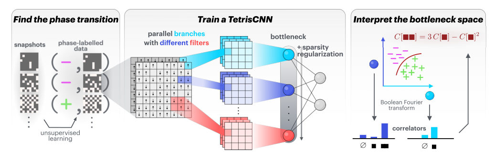
<figcaption class="paper-figure-caption"><b>Fig 1.</b> FIG. 1: TetrisCNN processes snapshots through parallel branches with differently shaped filters that map to spin correlators. Sparsity suppresses redundant or task-irrelevant branches, yielding a low-dimensional interpretable bottleneck from which the decision boundary can be expressed symbolically in terms of spin correlators.</figcaption>
</figure>
<figure class="paper-figure-card">
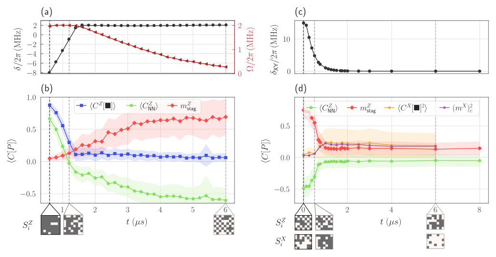
<figcaption class="paper-figure-caption"><b>Fig 2.</b> FIG. 2: Experimental quantum data. (a),(c) Experimental protocols for the Ising and XY datasets, including control parameters, measurement points, and representative snapshots from the 8 × 8 Ising [64] and 6 × 7 XY [65] Rydberg-atom quantum simulators. (b),(d) Selected snapshot-averaged spin correlators, cf. Eq. (3), with shaded regions indicating their standard deviation across the sweeps: mstag = CA[■] −CB[■], with A, B being the two sublattices, CNN = Crot[■■] = 1</figcaption>
</figure>
<figure class="paper-figure-card">
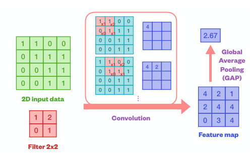
<figcaption class="paper-figure-caption"><b>Fig 3.</b> FIG. 3: Example of convolution with a 2 × 2 filter, followed by global average pooling (GAP). The filter is applied across the input to produce a feature map, which GAP reduces to a scalar.</figcaption>
</figure>
<figure class="paper-figure-card">
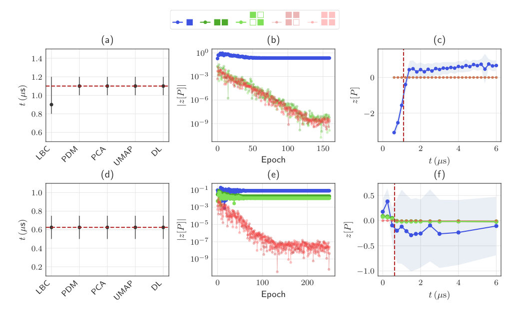
<figcaption class="paper-figure-caption"><b>Fig 4.</b> FIG. 4: Data-driven transition detection and interpretable classification from experimental snapshots for (a)–(c) Ising and (d)–(f) XY. (a,d) Transition locations estimated with established unsupervised methods (App. E). Red dashed lines mark the location used to define supervised labels. For Ising, the detected change is the polarization crossover rather than the later antiferromagnetic phase transition. (b,e) Evolution of rotationally invariant TetrisCNN branch activations during training, showing sparsity-induced suppression of task-irrelevant branches. (c,f) Activations of the surviving branches across the experimental sweeps. Unfilled squares denote masked-out sites.</figcaption>
</figure>
<figure class="paper-figure-card">
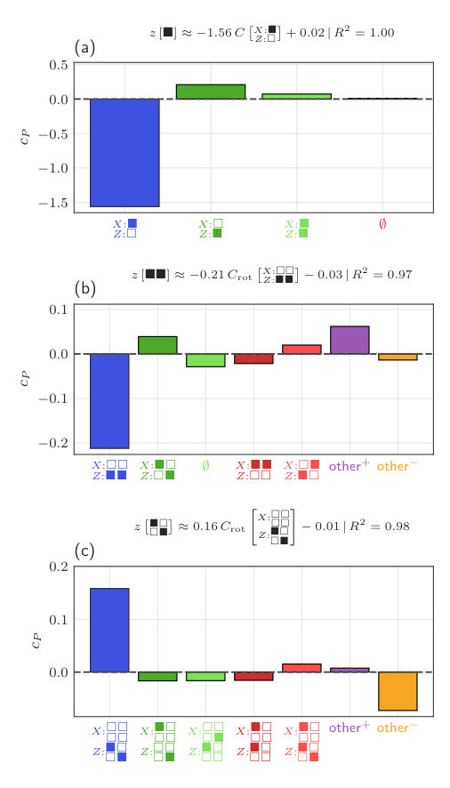
<figcaption class="paper-figure-caption"><b>Fig 5.</b> FIG. 5: Mapping from branch activations to correlators via multilinear regression for three active branches in TetrisCNN trained on the XY dataset as in Fig. 4(e)-(f), enabled by the Boolean Fourier expansion, Eq. (7). We need only to consider correlators C[P ′], P ′ ⊆P defined by patterns P ′ that are contained in the filter pattern P (see Tab. I). Note that with all C[P ′], P ′ ⊆P, the fit is perfect (R2 = 1). Small positive (negative) contributions are summed into “other+(–)”. The complete decomposition is shown in Fig. 21.</figcaption>
</figure>
</div>

<p><strong>Summary.</strong> This paper introduces TetrisCNN, an interpretable neural network designed to detect quantum phase transitions from experimental simulator data. By learning representations directly from measurable spin correlators, it overcomes the 'black box' problem of standard NNs. The key achievement is deriving the phase boundaries as explicit, symbolic formulas based on experimentally accessible quantities.</p>
<p><strong>Why it may be interesting.</strong> It provides a concrete, interpretable bridge between advanced machine learning techniques and fundamental condensed matter physics problems, offering a pathway to extract physical laws from complex quantum simulation data.</p>
<details>
<summary>Detailed structure</summary>
<p><strong>Main problem.</strong> Detecting quantum phases of matter is difficult, as traditional methods rely on physical intuition, while black-box neural networks fail to provide physical understanding or generalize to noisy experimental data.</p>
<p><strong>Main result.</strong> The proposed TetrisCNN framework successfully detects phase transitions and crossovers and, crucially, expresses the decision boundaries as symbolic formulas built directly from measurable spin correlators.</p>
<p><strong>Method.</strong> The authors introduce TetrisCNN, a convolutional architecture using parallel branches with varied filters to learn sparse, interpretable latent representations based on spin correlators.</p>
<p><strong>Model / system.</strong> The method is applied to experimental snapshots from 2D quantum simulators, specifically modeling the Ising and XY Hamiltonians using Rydberg-atom arrays in optical tweezer lattices.</p>
<p><strong>Key observables.</strong> Spin correlators (e.g., $  ext{mstag}$, $  ext{CNN}$), magnetization, and the classification/regression output defining the phase boundary.</p>
<p><strong>Important parameters / regimes.</strong> Lattice spacing ($a=10 \mu	ext{m}$), interaction strength ($U/h \approx 1.95 	ext{ MHz}$), and varying external fields ($\delta, \Omega$).</p>
<p><strong>Assumptions / limitations.</strong> The analysis relies on fitting a surrogate model (like logistic regression) to approximate the complex decision boundary learned by the deep network.</p>
<p><strong>Figures summary.</strong> Figures illustrate the CNN architecture mapping filters to correlators, the comparison of linear vs. quadratic approximations of the phase boundary, and the stability of the learned representations.</p>
<p><strong>Paper structure.</strong> The paper first establishes the limitations of current phase detection methods, introduces TetrisCNN, demonstrates its application to 2D Ising/XY models, and concludes by showing how the learned decision boundaries can be analytically approximated using measurable correlators.</p>
</details>
<details>
<summary>Abstract</summary>
<p>Detecting phases of matter in general relies on identifying the correct order parameter - a task that remains notoriously difficult for unknown transitions and traditionally is guided by physical intuition and educated guess. Neural networks have recently offered an alternative route by locating phase transitions in known models without any a priori physical knowledge. Yet these approaches remain black boxes and only identify phases without elucidating their properties. Moreover, they often struggle when confronted with realistic, noisy experimental data, which constitute the ultimate testbed for automated methods in physics. Here, we bridge these perspectives by introducing TetrisCNN, a convolutional architecture with parallel branches of differently shaped filters, reminiscent of Tetris blocks, that learns sparse, interpretable latent representations directly in terms of spin correlators. Applied to experimental snapshots of two-dimensional Ising and XY quantum simulators measured in multiple bases, the network not only detects phase transitions and crossovers but also expresses its latent representation and decision boundaries as symbolic formulas built from experimentally measurable spin correlators. This framework opens the way to integrating interpretable neural networks with quantum simulators to uncover and understand new phases of matter.</p>
</details>
<p><sub><a href="#top">↑ back to top</a></sub></p>

<p><a id="paper-2609.20406"></a></p>
<h3 id="the-effects-of-shot-noise-on-the-quantum-computation-of-nmr-spectra">⭐ <a href="http://arxiv.org/abs/2609.20406v1">The effects of shot noise on the quantum computation of NMR spectra</a></h3>
<p><strong>Highlighted author(s):</strong> Igor Lesanovsky<br>
<strong>Authors:</strong> Sebastian Walch, Keith R. Fratus, Jan-Michael Reiner, Igor Lesanovsky<br>
<strong>Type:</strong> theory · <strong>Category:</strong> quantum information and computing · <strong>PDF:</strong> <a href="https://arxiv.org/pdf/2609.20406v1">https://arxiv.org/pdf/2609.20406v1</a><br>
<strong>Analysis basis:</strong> full PDF text, analyzed in chunks
<strong>Topic relevance:</strong> <code>quantum measurements</code> <strong>3/5</strong> · <code>analog quantum simulation</code> <strong>1/5</strong></p>
<div class="figure-strip-hint">↔ Scroll figures horizontally</div>
<div class="paper-figures-scroll">
<figure class="paper-figure-card">
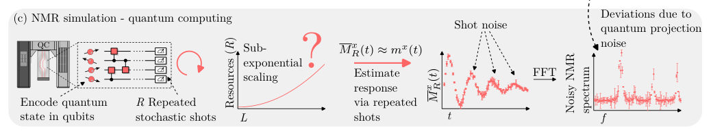
<figcaption class="paper-figure-caption"><b>Fig 1.</b> Figure 1. NMR spectroscopy and computational resources. (a) Molecules containing L NMR-active nuclei represent a many-body system modeled by coupled quantum spins [cf. Eq. (1)]. In an external magnetic field, radio-frequency pulses induce spin dynamics whose time-dependent magnetic response mx(t) (and my(t)) is measured. The corresponding NMR spectrum is obtained via a fast Fourier transform (FFT) of this signal. (b) NMR spectra may be computed up to machine precision with classical computers, for example from the FFT of the expectation values of magnetization operators ⟨ˆ M x(t)⟩(and ⟨ˆ M y(t)⟩). However, since the Hilbert space grows exponentially with the number of NMR-active nuclei L,...</figcaption>
</figure>
<figure class="paper-figure-card">
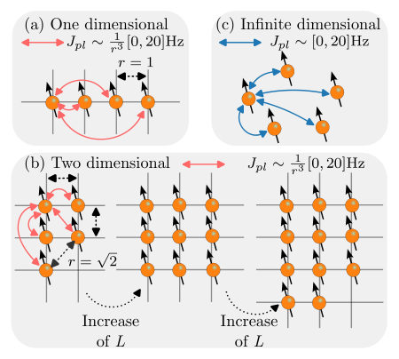
<figcaption class="paper-figure-caption"><b>Fig 2.</b> Figure 2. Considered geometries. (a) One-dimensional chain with distance-dependent couplings Jpl = Kpl/r3 pl. (b) Two-dimensional square lattice with the same distance depen- dence. For increasing L, the lattice is enlarged by complet- ing square configurations and then adding spins around the boundary. (c) Infinite-dimensional geometry without spatial dependence, where Jpl = Kpl. For all geometries, Kpl is sam- pled uniformly from [0, 20] Hz.</figcaption>
</figure>
<figure class="paper-figure-card">
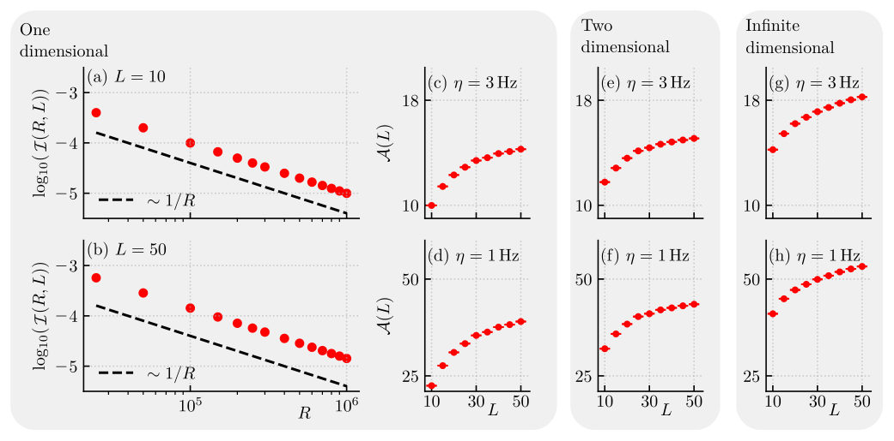
<figcaption class="paper-figure-caption"><b>Fig 3.</b> Figure 3. Infidelity and scaling function. (a,b) infidelity I(R, L) as a function of the number of shots R for the one- dimensional geometry with broadening η = 3 Hz, shown for (a) L = 10 and (b) L = 50. The scaling I(R, L) ∼R−1 is evident. (c)–(h) Scaling function A(L) for all considered geometries and broadening parameters. In all cases, A(L) increases with system size, indicating that larger molecules require more shots to achieve the same target infidelity. The growth becomes weaker for larger L. This flattening effect is most pronounced in the one- and two-dimensional geometries, while the infinite- dimensional geometry exhibits the strongest overall increase. Across all geometries,...</figcaption>
</figure>
<figure class="paper-figure-card">
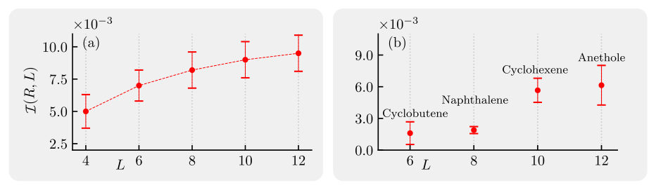
<figcaption class="paper-figure-caption"><b>Fig 4.</b> Figure 4. Scaling of the infidelity for Heisenberg Hamiltonians. (a) Infidelity I(R, L) as a function of system size L for the one-dimensional geometry with broadening parameter η = 3 Hz and R = 1024 shots. The infidelity increases only weakly with system size and does not exhibit a pronounced growth over the considered range of L, suggesting that the favorable shot noise behavior observed for the Ising model is not qualitatively changed by the more general Heisenberg interaction, although the data should be understood as an illustrative small-system check rather than a scaling analysis. (b) Infidelity I(R, L) for four example molecules with Heisenberg couplings, evaluated from noisy...</figcaption>
</figure>
</div>

<p><strong>Summary.</strong> This work analyzes the impact of shot noise on simulating quantum many-body systems using NMR spectra as a test case. By quantifying the required number of measurement shots, the authors show that the resource scaling is weak with system size. This suggests that statistical noise may not fundamentally limit the potential for quantum advantage in such simulations.</p>
<p><strong>Why it may be interesting.</strong> It directly addresses a critical practical hurdle for quantum computation—measurement noise—by providing quantitative bounds on resource scaling for a physically relevant many-body problem like NMR.</p>
<details>
<summary>Detailed structure</summary>
<p><strong>Main problem.</strong> The paper investigates how the statistical noise inherent in quantum measurements (shot noise) affects the ability to simulate complex quantum systems, specifically focusing on the scaling of required computational resources.</p>
<p><strong>Main result.</strong> The required number of measurement shots needed to achieve a desired accuracy scales only weakly with the system size, suggesting that shot noise does not pose a fundamental barrier to achieving quantum advantage in NMR simulation.</p>
<p><strong>Method.</strong> The authors analyze the scaling of the infidelity between the noisy quantum simulation result and the exact reference result by expanding the cosine similarity in powers of the noise.</p>
<p><strong>Model / system.</strong> The test case is the simulation of Nuclear Magnetic Resonance (NMR) spectra, modeled by coupled nuclear spin systems governed by Heisenberg or Ising Hamiltonians. The simulation is mapped onto a qubit register for quantum computation.</p>
<p><strong>Key observables.</strong> The required number of shots ($R$), the spectral noise covariance ($ ext{Cov}[\epsilon_R]$), and the resulting infidelity ($1 - C(s_R, s)$).</p>
<p><strong>Important parameters / regimes.</strong> System size ($L$, number of nuclei), desired accuracy, and the number of shots ($R$).</p>
<p><strong>Assumptions / limitations.</strong> The analysis focuses solely on shot noise, neglecting other error sources like decoherence or Trotterization errors, and relies on expanding the fidelity metric to second order in the noise.</p>
<p><strong>Figures summary.</strong> Figure 1 compares NMR spectroscopy across physical, classical (exponential), and quantum (shot-noise limited) regimes. Other figures detail numerical results for both Ising and Heisenberg model Hamiltonians across varying system sizes.</p>
<p><strong>Paper structure.</strong> The paper establishes the problem by comparing classical and quantum simulation scaling, then develops the theoretical framework by calculating the single-shot variance and deriving the scaling of the infidelity with $R$ using the Central Limit Theorem.</p>
</details>
<details>
<summary>Abstract</summary>
<p>Recent advances in the field of quantum computing hardware motivate the search for applications which demonstrate so-called quantum advantage. One promising use case that has been identified is the simulation of quantum many-body systems. The computational resources required for performing such a simulation on a classical computer generally grow exponentially with the size of the system being modeled, which is ultimately due to the exponential growth of the Hilbert space in which the dynamics of such a system take place. While digital quantum computers natively evolve quantum states directly in such a Hilbert space, thus naively avoiding this problem, the result of such a computation is typically not obtained as a deterministic output. Rather, it requires projective measurements which are fundamentally affected by shot noise. Any desired expectation values must therefore be reconstructed from repeated measurements, making the number of those measurements a relevant computational resource, and thus an important consideration for any potential claims of quantum advantage. In this work, we study how this resource scales with system size (a scaling which itself depends on the desired accuracy of the final result), using the simulation of nuclear magnetic resonance (NMR) spectra as a test case. We study this scaling for both real-world molecules, as well as a class of model NMR Hamiltonians which allow for efficient large-scale simulations with one-dimensional, two-dimensional, and all-to-all interactions. We find that the required resources increase only weakly with molecular size, far below the exponential growth of the underlying Hilbert space. This result suggests that shot noise should not pose a fundamental barrier to achieving quantum advantage in the simulation of NMR systems, and perhaps for many-body systems more broadly.</p>
</details>
<p><sub><a href="#top">↑ back to top</a></sub></p>

<p><a id="paper-2609.20766"></a></p>
<h3 id="analytic-leakage-suppression-with-a-single-control-field-fast-two-qubit-gates-with-tunable-couplers">⭐ <a href="http://arxiv.org/abs/2609.20766v1">Analytic leakage suppression with a single control field: fast two-qubit gates with tunable couplers</a></h3>
<p><strong>Highlighted author(s):</strong> Aashish A. Clerk<br>
<strong>Authors:</strong> Lukas Heunisch, Michael J. Hartmann, Aashish A. Clerk<br>
<strong>Type:</strong> theory · <strong>Category:</strong> quantum information and computing · <strong>PDF:</strong> <a href="https://arxiv.org/pdf/2609.20766v1">https://arxiv.org/pdf/2609.20766v1</a><br>
<strong>Analysis basis:</strong> full PDF text, analyzed in chunks
<strong>Topic relevance:</strong> <code>QC/QI experiment</code> <strong>3/5</strong></p>
<div class="figure-strip-hint">↔ Scroll figures horizontally</div>
<div class="paper-figures-scroll">
<figure class="paper-figure-card">
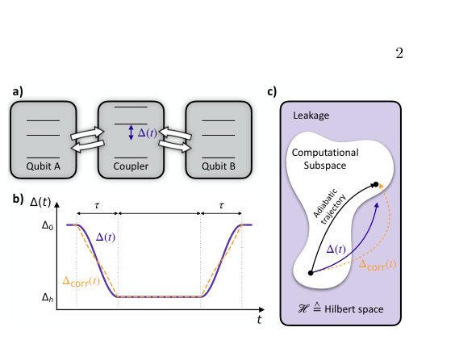
<figcaption class="paper-figure-caption"><b>Fig 1.</b> FIG. 1. a) Schematic of a generic qubit–tunable coupler–qubit architecture. b) Time-dependent coupler detuning ∆(t) (real- ized via baseband flux control), ramping from the idle detun- ing ∆0 to the hold value ∆h for a finite gate duration tg. The goal is to start with a base pulse shape (blue) and modify it slightly (orange) to mitigate leakage errors. c) Schematic of relevant trajectories in the full Hilbert space H . The goal is an ideal evolution between computational states (white). A finite gate time leads to non-adiabatic errors, and population of leakage states (purple, blue trajectory). The correction strategy is to use available controls to cancel leakage at the final time, not at...</figcaption>
</figure>
<figure class="paper-figure-card">
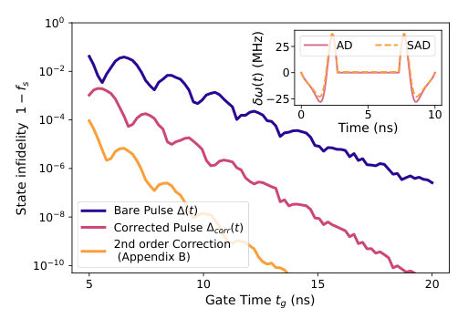
<figcaption class="paper-figure-caption"><b>Fig 2.</b> FIG. 3. State infidelity 1 −fs = 1 −| ⟨ψideal|ψ(tg)⟩|2 for an iSWAP gate simulated with the parameters of Table I. To account for realistic fabrication imperfections, the plot- ted results are averaged over normally distributed, correlated fluctuations of the coupling strengths (see main text for a detailed description). Over a wide range of gate times tg, the first-order correction (pink line) reduces the state infi- delity by at least two orders of magnitude compared to the bare pulse (blue line). Applying a higher-order correction in the superadiabatic frame (orange line, see Appendix B) sup- presses the error by approximately three more orders of mag- nitude, demonstrating the...</figcaption>
</figure>
<figure class="paper-figure-card">
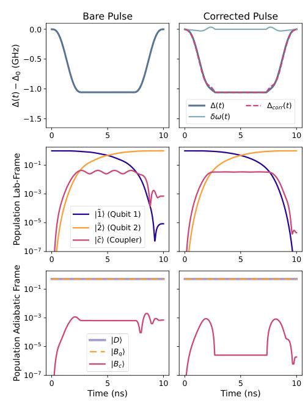
<figcaption class="paper-figure-caption"><b>Fig 3.</b> FIG. 2. Simulation of an iSWAP gate in the one-excitation subspace (cf. Eq. (1)), comparing performance of a simple base coupler pulse (left column) with a corrected version (as derived in Eq. (29)) (right column). The corrected pulse effec- tively suppresses the interaction matrix element between the |Bq⟩and |Bc⟩states, reducing the population of the coupler- like state |Bc⟩in the adiabatic frame by several orders of mag- nitude (bottom row). Consequently, leakage into the coupler state at the end of the gate is significantly mitigated, as shown in the middle row. The simulation parameters are listed in Table I.</figcaption>
</figure>
<figure class="paper-figure-card">
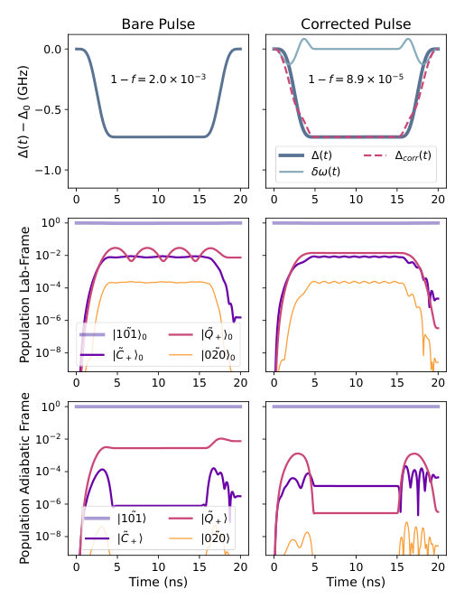
<figcaption class="paper-figure-caption"><b>Fig 4.</b> FIG. 4. Simulation of Eq. (42) for an iSWAP gate, comparing a bare coupler pulse (left column) with the active, numerically precise correction derived in Section III (right column). Pro- jected onto the computational basis, which corresponds to the eigenstates of Eq. (42) at t = 0 (middle row), the population of the fidelity-limiting state | ˜Q+⟩0 drops from O(10−2) for the bare pulse to O(10−6) with the correction. This improve- ment stems from the suppression of the interaction matrix element in the adiabatic frame, which reduces the popula- tion of the time-dependent instantaneous eigenstate | ˜Q+⟩by three orders of magnitude (bottom row). Both the bare and corrected pulses are plotted...</figcaption>
</figure>
<figure class="paper-figure-card">
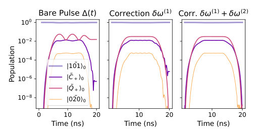
<figcaption class="paper-figure-caption"><b>Fig 5.</b> FIG. 5. State populations in the second-excited subspace dur- ing the 20 ns iSWAP gate. The dynamics of Eq. (42) was sim- ulated using three levels per qubit for three distinct scenarios: using the bare coupler pulse alone (left), with the primary correction δω(1) (middle), and with the combined correction δω(1) + δω(2) to suppress two leakage states (right). To opti- mally balance the suppression of the residual | ˜C+⟩0 popula- tion against higher-order errors induced by the secondary cor- rection, the individual amplitudes of δω(1) and δω(2) were op- timized as independent free parameters for the results shown in the right panel.</figcaption>
</figure>
</div>

<p><strong>Summary.</strong> This paper introduces a novel analytic pulse-shaping technique to mitigate leakage errors during fast two-qubit gates in superconducting qubits. By utilizing a Magnus expansion, the authors derive a correction pulse that effectively cancels non-adiabatic leakage caused by the time-varying coupler. This method is highly valuable as it works even when only a single baseband control field is available, significantly boosting gate fidelity.</p>
<p><strong>Why it may be interesting.</strong> This work provides a powerful, general, and analytically derived tool for designing quantum control pulses in superconducting circuits, overcoming the limitations imposed by single-parameter control fields common in hardware.</p>
<details>
<summary>Detailed structure</summary>
<p><strong>Main problem.</strong> The paper addresses the challenge of suppressing non-adiabatic leakage errors during fast two-qubit quantum gates when the control mechanism is limited to a single real-valued control field.</p>
<p><strong>Main result.</strong> A novel analytic pulse-shaping technique, derived via a Magnus expansion, was shown to suppress leakage in a fast iSWAP gate by up to three orders of magnitude for realistic superconducting circuit parameters.</p>
<p><strong>Method.</strong> The authors derive a correction pulse by applying a Magnus expansion to the Hamiltonian in the adiabatic frame, allowing them to cancel the non-adiabatic error terms generated by the time-varying coupling.</p>
<p><strong>Model / system.</strong> The system modeled is two superconducting transmon qubits coupled by a tunable coupler, whose dynamics are controlled by baseband flux pulses. The analysis focuses on the evolution between instantaneous eigenstates (dark and bright states).</p>
<p><strong>Key observables.</strong> Non-adiabatic leakage population into the coupler state, and the resulting gate fidelity (e.g., $1-f$ for CZ gate).</p>
<p><strong>Important parameters / regimes.</strong> Gate time ($t_g$), coupling strength ($g$), detuning ($\Delta(t)$), and the required correction pulse amplitude ($\delta\omega(t)$).</p>
<p><strong>Assumptions / limitations.</strong> The method is derived using a Magnus expansion truncated to first order, and the analysis assumes the system can be effectively described in the adiabatic frame.</p>
<p><strong>Figures summary.</strong> Figures illustrate the schematic architecture, the time-dependent detuning profiles, and the population evolution comparing bare pulses versus the corrected pulses, showing leakage suppression.</p>
<p><strong>Paper structure.</strong> The paper first establishes the problem (leakage with single control fields), develops the Magnus-based analytic correction technique, and then validates this technique by simulating two-qubit gates (iSWAP and CZ) against established methods.</p>
</details>
<details>
<summary>Abstract</summary>
<p>Simple analytic pulse-shaping techniques are of great practical utility in quantum control, with prime examples being the DRAG method for suppressing leakage in superconducting microwave gates and the transitionless-driving approach to shortcuts-to-adiabaticity. Standard versions of these methods require two orthogonal control channels, with the second channel effectively breaking time-reversal symmetry. This appears to rule out their use in settings with only a single real-valued control field, such as the kind of baseband flux control that is common in many superconducting circuit architectures. We show here that a simple analytic pulse-shaping technique derived via a Magnus expansion is effective even with just a single baseband control channel. We demonstrate its efficacy by simulating a two-qubit gate between transmons realized with a tunable coupler and baseband flux pulses. Our corrections dramatically reduce non-adiabatic leakage caused by ramping the coupler: for realistic device parameters, leakage in a fast iSWAP gate is suppressed by up to three orders of magnitude. Our approach is general, goes beyond simply suppressing unwanted spectral weight at leakage transitions, and can be applied to a variety of platforms.</p>
</details>
<p><sub><a href="#top">↑ back to top</a></sub></p>

<p><a id="paper-2609.20500"></a></p>
<h3 id="particle-physics-driven-by-quantum-technology-quantum-simulations-and-quantum-sensing">⭐ <a href="http://arxiv.org/abs/2609.20500v1">Particle Physics Driven by Quantum Technology - Quantum Simulations and Quantum Sensing</a></h3>
<p><strong>Highlighted author(s):</strong> Itay M. Bloch<br>
<strong>Authors:</strong> Itay M. Bloch, Marcela Carena, Yifan Chen, Xinran Li, Ying-Ying Li, Jing Shu<br>
<strong>Type:</strong> theory · <strong>Category:</strong> other · <strong>PDF:</strong> <a href="https://arxiv.org/pdf/2609.20500v1">https://arxiv.org/pdf/2609.20500v1</a><br>
<strong>Analysis basis:</strong> full PDF text, analyzed in chunks
<strong>Topic relevance:</strong> <code>analog quantum simulation</code> <strong>2/5</strong> · <code>Full counting statistics</code> <strong>1/5</strong> · <code>Keldysh / 2PI / non-Gaussian methods</code> <strong>1/5</strong> · <code>QC/QI experiment</code> <strong>1/5</strong> · <code>quantum measurements</code> <strong>1/5</strong> · <code>quantum optics experiment</code> <strong>1/5</strong></p>
<div class="figure-strip-hint">↔ Scroll figures horizontally</div>
<div class="paper-figures-scroll">
<figure class="paper-figure-card">
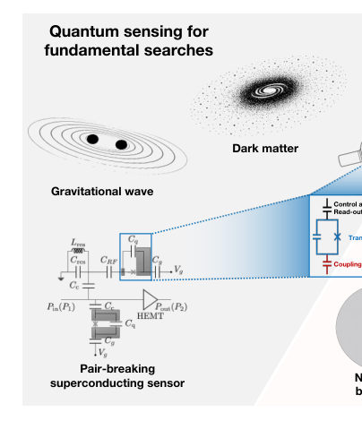
<figcaption class="paper-figure-caption"><b>Fig 1.</b> Figure 1: Quantum sensing and quantum simulation with superconducting platforms. Left: quantum sensing with superconducting cavities and pair-breaking detectors, probing weak signals from dark matter and gravitational waves. Right: quantum simulations using transmon-based superconducting processors, enabling first-principles studies of non- perturbative quantum field dynamics. Images include a superconducting quantum chip (IBM) and conceptual cavity-based sensor designs (adapted from [10]).</figcaption>
</figure>
<figure class="paper-figure-card">
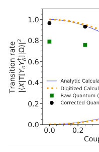
<figcaption class="paper-figure-caption"><b>Fig 2.</b> Figure 4: The transition rates from the vacuum to the lowest-lying single excited state induced by a pair of energetic particle-antiparticle moving back-to-back, for a system of three lattice sites and nq = 2 qubits per site. Adapted from Ref. [155], licensed under CC BY 4.0.</figcaption>
</figure>
<figure class="paper-figure-card">
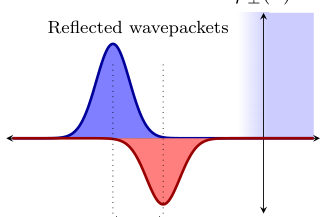
<figcaption class="paper-figure-caption"><b>Fig 3.</b> Figure 5: (a) The phase asymmetry Φ between the reflected conjugate pairs, which is defined as the distance between the peaks of the reflected Gaussian wave packets of the conjugate pair (blue for particle wave packet, red for anti-particle wave packet). ρ±(x) is the local charge densities for the wave packets. The magnitude asymmetry is the total charge difference in the symmetric phase between the conjugat pair. (b) The simulation results obtained using tensor network method for the phase asymmetry observable ˆΦ∞ —the lattice counterpart of Φ— are shown in the asymptotic regime (t →∞), once the reflection process is complete. Adapted from Ref. [156], licensed under CC BY 4.0.</figcaption>
</figure>
<figure class="paper-figure-card">
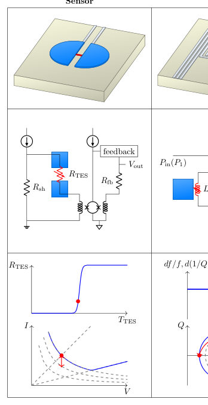
<figcaption class="paper-figure-caption"><b>Fig 4.</b> Figure 6: Three major phonon-sensitive pair-breaking superconducting sensors. The typical device geometries (top row), equivalent circuit diagram including the readout electronics (middle row), and the operation principles (bottom row) are shown for transition edge sensors (TESs, left column), kinetic inductance devices (KIDs, middle column), and Qubits (right column). The blue regions in the top and middle rows indicate the phonon-absorbing volume, red regions indicate the active sensing elements: a superconductor resistor biased on the transition edge in a TES; a superconducting inductor in a KID; a Josephson junction in a Qubit. The top diagrams in the operation principles demonstrate...</figcaption>
</figure>
</div>

<p><strong>Summary.</strong> This review surveys how rapid progress in quantum technologies—specifically quantum simulation and quantum sensing—is poised to revolutionize particle physics. It highlights that quantum computers can tackle classically intractable problems in Quantum Field Theory, while ultra-sensitive detectors can search for elusive physics beyond the Standard Model. Ultimately, the paper argues that quantum tools are reshaping the frontier of fundamental physics research.</p>
<p><strong>Why it may be interesting.</strong> It provides a high-level roadmap connecting cutting-edge quantum hardware development (superconducting circuits, quantum algorithms) directly to fundamental physics questions, which is highly relevant for theorists working on open quantum systems and many-body dynamics.</p>
<details>
<summary>Detailed structure</summary>
<p><strong>Main problem.</strong> The paper addresses how emerging quantum technologies can be leveraged to tackle fundamental, classically intractable problems in particle physics, particularly those beyond the Standard Model.</p>
<p><strong>Main result.</strong> Quantum computing and quantum sensing are emerging as uniquely powerful platforms capable of simulating non-perturbative Quantum Field Theory dynamics and achieving unprecedented sensitivity for detecting weak physical signals.</p>
<p><strong>Method.</strong> The review synthesizes progress across two main avenues: quantum simulation for QFT dynamics and quantum sensing for BSM searches, detailing the underlying quantum mechanical principles and technological requirements.</p>
<p><strong>Model / system.</strong> The scope covers diverse physical systems, including superconducting circuits (transmons, resonators), detectors (SNSPDs, KIDs), and theoretical models like Quantum Field Theories (QFT) for phenomena such as hadronization and dark matter interactions.</p>
<p><strong>Key observables.</strong> Detection of faint BSM signals (e.g., axions), non-perturbative QFT dynamics, and measurements related to gravitational waves.</p>
<p><strong>Important parameters / regimes.</strong> The required development towards large-scale, fault-tolerant quantum systems, and the sensitivity limits set by quantum noise sources.</p>
<p><strong>Assumptions / limitations.</strong> The primary assumption is that quantum technologies will mature sufficiently to overcome current computational and noise limitations to advance fundamental physics.</p>
<p><strong>Figures summary.</strong> Figure 1 illustrates the direct connection between quantum sensing (using superconducting cavities/detectors for dark matter/GWs) and quantum simulation (using transmon processors for non-perturbative QFT dynamics).</p>
<p><strong>Paper structure.</strong> The paper is structured as a review, first establishing the general motivation, then detailing the potential of quantum simulation for QFT, and subsequently covering the advancements in quantum sensing for BSM physics.</p>
</details>
<details>
<summary>Abstract</summary>
<p>We review recent advances in particle physics enabled and motivated by the rapid progress of quantum technologies. The continued development of quantum computing toward large-scale, fault-tolerant systems has the potential to address dynamical problems that remain extremely challenging for classical computational approaches, opening new avenues for studying nonperturbative dynamical processes. Tabletop detectors and quantum-enhanced technologies have reached unprecedented sensitivities, enabling novel searches for ultralight particles, gravitational waves, and other physics beyond the Standard Model in parameter regimes previously inaccessible to conventional instrumentation. Taken together, these developments highlight a rapidly evolving landscape in which quantum technologies are beginning to reshape fundamental physics. We aim to synthesize recent progress and illuminate the opportunities they present for advancing particle physics in the coming years.</p>
</details>
<p><sub><a href="#top">↑ back to top</a></sub></p>

<p><a id="paper-2609.19317"></a></p>
<h3 id="observing-and-evading-quantum-back-action-on-a-kilogram-scale-oscillator"><a href="http://arxiv.org/abs/2609.19317v1">Observing and evading quantum back-action on a kilogram-scale oscillator</a></h3>
<p><strong>Authors:</strong> Begüm Kabagöz, Eric Oelker, Dhruva Ganapathy, Nergis Mavalvala, Vivishek Sudhir, Vladimir Bossilkov, Joseph Betzweiser, Valery V. Frolov, Anamaria Effler, Adam Mullavey, Lisa Barsotti, Evan D. Hall, Peter Fritschel, R. Abbott, I. Abouelfettouh, R. X. Adhikari, A. Ananyeva, S. Appert, S. K. Apple, K. Arai, N. Aritomi, S. M. Aston, M. Ball, S. W. Ballmer, D. Barker, B. K. Berger, D. Bhattacharjee, G. Billingsley, S. Biscans, C. D. Blair, N. Bode, E. Bonilla, A. Branch, A. F. Brooks, D. D. Brown, J. Bryant, C. Cahillane, A. Calafat, S. R. Callos, H. Cao, E. Capote, F. Clara, J. Collins, C. M. Compton, G. Connolly, R. Cottingham, D. C. Coyne, R. Crouch, J. Csizmazia, A. Cumming, L. P. Dartez, D. Davis, N. Demos, E. Dohmen, K. L. Dooley, J. C. Driggers, S. E. Dwyer, A. Ejlli, T. Etzel, M. Evans, J. Feicht, R. Frey, W. Frischhertz, M. Fuentes-Garcia, P. Fulda, M. Fyffe, B. Gateley, T. Gayer, J. A. Giaime, K. D. Giardina, J. Glanzer, E. Goetz, R. Goetz, A. W. Goodwin-Jones, S. Gras, C. Gray, D. Griffith, H. Grote, T. Guidry, J. Gurs, J. Hanks, J. Hanson, M. C. Heintze, A. F. Helmling-Cornell, N. A. Holland, D. Hoyland, H. Y. Huang, Y. Inoue, A. L. James, A. Jamies, R. Jaume, A. Jennings, W. Jia, D. H. Jones, S. Karat, S. Karki, M. Kasprzack, K. Kawabe, N. Kijbunchoo, P. J. King, J. S. Kissel, K. Komori, A. Kontos, R. Kumar, K. Kuns, M. Landry, B. Lantz, M. Laxen, K. Lee, M. Lesovsky, F. Llamas Villarreal, M. Lormand, H. A. Loughlin, R. Macas, M. MacInnis, C. N. Makarem, B. Mannix, G. L. Mansell, R. M. Martin, K. Mason, F. Matichard, N. Maxwell, G. McCarrol, R. McCarthy, D. E. McClelland, S. McCormick, T. McRae, F. Mera, E. L. Merilh, J. R. Mérou, F. Meylahn, R. Mittleman, D. Moraru, G. Moreno, M. Nakano, T. J. N. Nelson, A. Neunzert, J. Notte, J. Oberling, T. O'Hanlon, R. Oram, C. Osthelder, D. J. Ottaway, H. Overmier, W. Parker, O. Patane, A. Pele, H. Pham, M. Pirello, J. Pullin, V. Quetschke, K. E. Ramirez, K. Ransom, J. Reyes, J. W. Richardson, M. Robinson, J. G. Rollins, C. L. Romel, J. H. Romie, M. P. Ross, B. I. Rotimi, K. Ryan, T. Sadecki, A. Sanchez, E. J. Sanchez, L. E. Sanchez, R. L. Savage, D. Schaetzl, M. G. Schiworski, R. Schnabel, R. M. S. Schofield, E. Schwartz, D. Sellers, T. Shaffer, R. W. Short, D. Sigg, B. J. J. Slagmolen, C. Soike, S. Soni, V. Srivastava, L. Sun, D. B. Tanner, M. Thomas, P. Thomas, K. A. Thorne, M. R. Todd, C. I. Torrie, G. Traylor, A. S. Ubhi, G. Vajente, J. Vanosky, A. Vecchio, P. J. Veitch, A. M. Vibhute, E. R. G. von Reis, J. Warner, B. Weaver, R. Weiss, C. Whittle, B. Willke, C. C. Wipf, J. L. Wright, V. A. Xu, H. Yamamoto, L. Zhang, M. E. Zucker<br>
<strong>Type:</strong> both · <strong>Category:</strong> other · <strong>PDF:</strong> <a href="https://arxiv.org/pdf/2609.19317v1">https://arxiv.org/pdf/2609.19317v1</a><br>
<strong>Analysis basis:</strong> full PDF text, analyzed in chunks
<strong>Topic relevance:</strong> 🔥 <code>quantum measurements</code> <strong>5/5</strong> · <code>quantum optics experiment</code> <strong>3/5</strong> · <code>correlated / nonlocal dissipation</code> <strong>2/5</strong> · <code>Keldysh / 2PI / non-Gaussian methods</code> <strong>1/5</strong> · <code>methods for driven-dissipative</code> <strong>1/5</strong></p>
<div class="figure-strip-hint">↔ Scroll figures horizontally</div>
<div class="paper-figures-scroll">
<figure class="paper-figure-card">
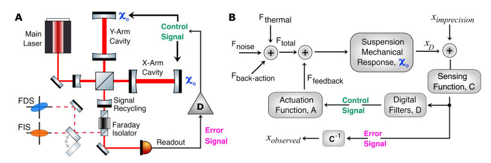
<figcaption class="paper-figure-caption"><b>Fig 1.</b> FIG. 1. Instrument overview and feedback-loop representation. A Simplified layout of the interferometer and readout chain used to sense and control the feedback-trapped differential arm mode. The main laser is resonant in the arm cavities, and the differential arm displacement is sensed at the antisymmetric port after the signal-recycling cavity and output Faraday isolator. Frequency-independent squeezing (FIS) or frequency-dependent squeezing (FDS) is injected into the readout path to modify the quantum measurement noise and radiation-pressure back-action acting on the mode. The optical readout produces an error signal, which is digitally filtered and converted into a control signal that...</figcaption>
</figure>
<figure class="paper-figure-card">
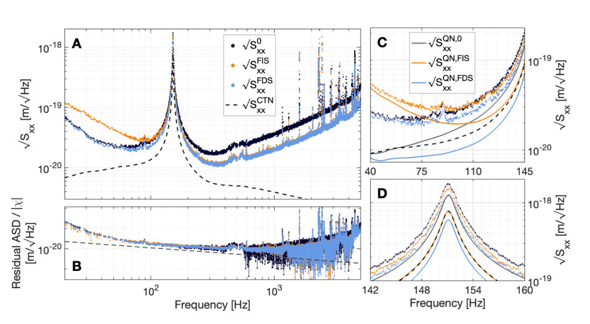
<figcaption class="paper-figure-caption"><b>Fig 2.</b> FIG. 2. Observed displacement spectra and quantum-noise model for the trapped mode. A Observed displace-</figcaption>
</figure>
<figure class="paper-figure-card">
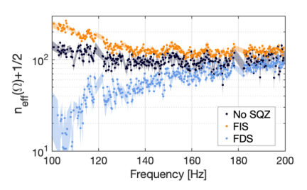
<figcaption class="paper-figure-caption"><b>Fig 3.</b> FIG. 4. Effective phonon occupancy of the reservoir. The effective phonon occupation neff(Ω) + 1</figcaption>
</figure>
<figure class="paper-figure-card">
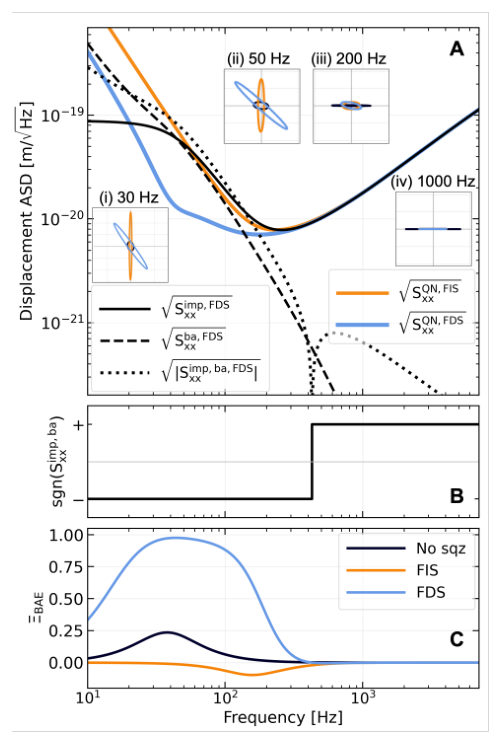
<figcaption class="paper-figure-caption"><b>Fig 4.</b> FIG. 3. Quantum-noise decomposition and correlation-driven back-action evasion. A Decom- position of the inferred displacement quantum noise for the frequency-dependent squeezing (FDS) configuration into the total noise, the effective imprecision contribution Simp xx , the effective back-action contribution Sba xx, and the magnitude</figcaption>
</figure>
<figure class="paper-figure-card">
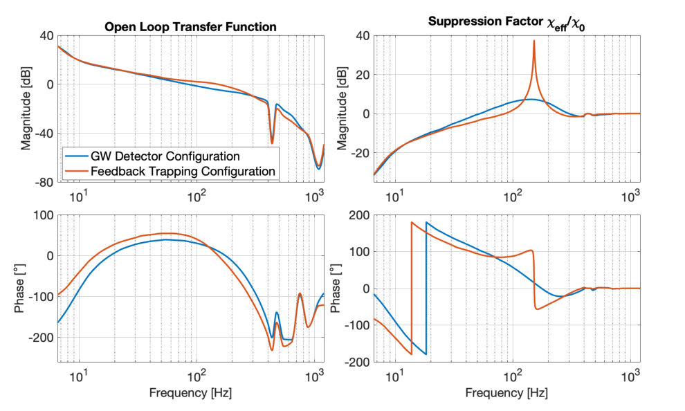
<figcaption class="paper-figure-caption"><b>Fig 5.</b> FIG. 5. Measured DARM open-loop transfer function and feedback-defined susceptibility modification. Left column: magnitude (top) and phase (bottom) of the measured DARM open-loop transfer function (OLTF) for the nominal configuration (no gain peaking) and with the feedback trap engaged. Right column: magnitude (top) and phase (bottom) of the corresponding suppression factor χeff(Ω)/χ0(Ω), where χeff is the effective closed-loop susceptibility inferred from the measured loop response and χ0 is the nominal free-mass susceptibility. The trapped configuration introduces a narrow-band modification near the trap resonance (∼151 Hz), consistent with an effective harmonic confinement of the...</figcaption>
</figure>
</div>

<p><strong>Summary.</strong> This research investigates the quantum noise limits in a massive mechanical oscillator, demonstrating that measurement back-action can be actively suppressed. By injecting frequency-dependent squeezed states, the authors engineered quantum correlations that partially cancel the inherent back-action noise, achieving a measurable 'back-action evasion' effect.</p>
<p><strong>Why it may be interesting.</strong> This work is highly relevant as it provides a concrete, macroscopic realization of quantum control over measurement back-action, directly testing fundamental limits predicted by quantum optics and open quantum systems theory.</p>
<details>
<summary>Detailed structure</summary>
<p><strong>Main problem.</strong> The paper addresses the fundamental quantum limit on continuous displacement measurements, which is set by the unavoidable trade-off between readout imprecision and measurement back-action noise.</p>
<p><strong>Main result.</strong> By engineering quantum correlations using frequency-dependent squeezing, the authors successfully demonstrated quantum back-action evasion, achieving a measurable suppression of the total observed motion near resonance.</p>
<p><strong>Method.</strong> The study uses a theoretical framework based on quantum noise decomposition and analyzes experimental data by comparing measured power spectral densities (PSDs) for different input quantum states (vacuum, FIS, FDS).</p>
<p><strong>Model / system.</strong> The system is a macroscopic, kilogram-scale mechanical oscillator (trapped mode) interrogated via a large-scale interferometer setup, modeled as a harmonic oscillator subject to quantum noise sources.</p>
<p><strong>Key observables.</strong> Observed displacement Power Spectral Density (PSD), the quantum noise components (imprecision, back-action, correlation), and the effective phonon occupation number ($n_{	ext{eff}}$).</p>
<p><strong>Important parameters / regimes.</strong> The trapped mode is characterized by an effective mass ($\sim 10 	ext{ kg}$), resonant frequency ($\sim 0.5 	ext{ Hz}$), and high quality factor ($Q \gtrsim 10^8$).</p>
<p><strong>Assumptions / limitations.</strong> The analysis relies on a linear quantum noise model and assumes that the observed suppression is due to the engineered negative correlation term in the quantum noise spectrum.</p>
<p><strong>Figures summary.</strong> Figures show the instrument overview, the feedback loop used to reshape the measurement, and detailed comparisons of the measured quantum noise spectra for vacuum, FIS, and FDS states, highlighting the resonance suppression.</p>
<p><strong>Paper structure.</strong> The paper progresses from defining the fundamental quantum noise trade-off in LIGO, to developing the mathematical framework incorporating correlation terms, and finally presenting quantitative results showing how specific squeezing techniques (FDS) can manipulate these correlations to achieve noise suppression.</p>
</details>
<details>
<summary>Abstract</summary>
<p>Continuous quantum displacement measurements are fundamentally limited by a trade-off between readout imprecision and measurement back-action, constrained by the Heisenberg uncertainty principle. In the Laser Interferometric Gravitational-Wave Observatory (LIGO), these two quantum noise components dominate much of the observation band, making it an excellent testbed. We induce a sub-Hz-linewidth optomechanical mode by trapping the differential motion of the 40-kg mirrors in a band where radiation-pressure back-action dominates the motion. Engineering the quantum state entering the dark port creates correlations between imprecision and back-action that partially cancel their contributions, reducing observed motion near resonance by ~47%. A framework resolving the imprecision, back-action, and correlation terms identifies the origin of this suppression. These results demonstrate quantum back-action evasion and quantum reservoir engineering in a macroscopic optomechanical system.</p>
</details>
<p><sub><a href="#top">↑ back to top</a></sub></p>

<p><a id="paper-2609.20434"></a></p>
<h3 id="non-thermal-effects-in-fermionic-atoms-coupled-to-open-cavities"><a href="http://arxiv.org/abs/2609.20434v1">Non-Thermal Effects in Fermionic Atoms Coupled to Open Cavities</a></h3>
<p><strong>Authors:</strong> Jules Sueiro, Marco Schiro<br>
<strong>Type:</strong> theory · <strong>Category:</strong> other · <strong>PDF:</strong> <a href="https://arxiv.org/pdf/2609.20434v1">https://arxiv.org/pdf/2609.20434v1</a><br>
<strong>Analysis basis:</strong> full PDF text, analyzed in chunks
<strong>Topic relevance:</strong> 🔥 <code>Keldysh / 2PI / non-Gaussian methods</code> <strong>4/5</strong> · 🔥 <code>driven-dissipative phase transition</code> <strong>4/5</strong> · 🔥 <code>non-equilibrium universality</code> <strong>4/5</strong> · <code>Tavis-Cummings &amp; cavity-many-emitter</code> <strong>3/5</strong> · <code>analog quantum simulation</code> <strong>3/5</strong> · <code>correlated / nonlocal dissipation</code> <strong>3/5</strong> · <code>methods for driven-dissipative</code> <strong>3/5</strong> · <code>scars &amp; prethermalization</code> <strong>3/5</strong> · <code>Dicke superradiance</code> <strong>1/5</strong> · <code>quantum measurements</code> <strong>1/5</strong> · <code>superradiant laser</code> <strong>1/5</strong></p>
<div class="figure-strip-hint">↔ Scroll figures horizontally</div>
<div class="paper-figures-scroll">
<figure class="paper-figure-card">
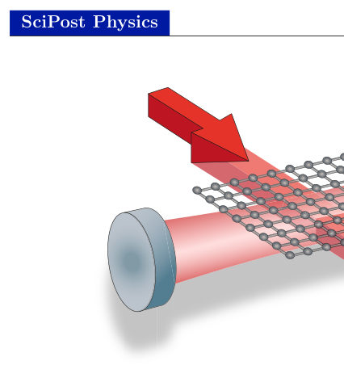
<figcaption class="paper-figure-caption"><b>Fig 1.</b> Figure 1: Illustration of the system. A system of fermionic atoms on a lattice coupled to a lossy cavity through a transverse pump.</figcaption>
</figure>
<figure class="paper-figure-card">
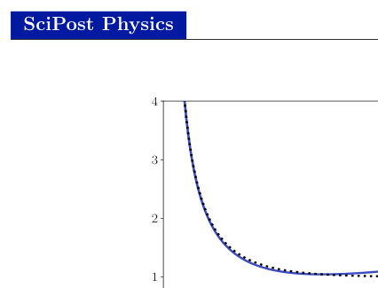
<figcaption class="paper-figure-caption"><b>Fig 2.</b> Figure 2: Distribution function ˜B(ω) of the symmetrized boson/cavity quadra- ture, compared to the thermal one at the same low-frequency effective temperature TLF.</figcaption>
</figure>
<figure class="paper-figure-card">
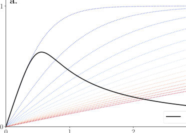
<figcaption class="paper-figure-caption"><b>Fig 3.</b> Figure 4: a. Non-equilibrium distribution function of the fermions ˜F(ε) as a function of the quasi-particle energy in units of the cavity frequency δ (full line). The dotted lines show the would-be equilibrium distribution function of fermions for different temperature in units of the LFET TLF. b. Distribution function superimposed with the density of states (green) in the normal phase for δ = 10J. c. for δ = 2J. d. in the superradiant phase with gϕ = 1.5δ and δ = 5J. e. In black, the effective temperature T ˙Q -in units of TLF- such that the heat-flux from the fermions to the cavity vanishes ˙Q = 0, as a function of the bandwidth of the fermions J/δ. In blue, the fluctuations of ˆ∆in the...</figcaption>
</figure>
<figure class="paper-figure-card">
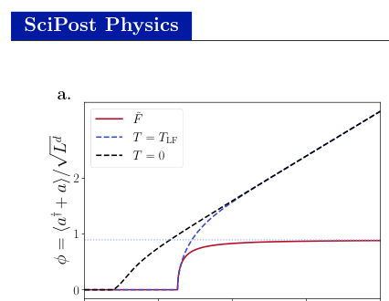
<figcaption class="paper-figure-caption"><b>Fig 4.</b> Figure 5: Order parameter obtained from the mean-field + kinetic equation resolution for a low bandwidth δ = 10J a. and high bandwidth δ = 2J b. fermionic systems. The other parameters are set to Γ = δ.</figcaption>
</figure>
<figure class="paper-figure-card">
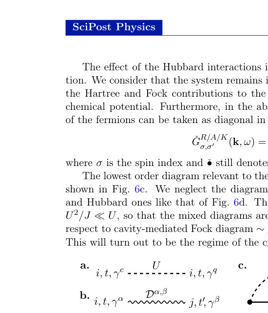
<figcaption class="paper-figure-caption"><b>Fig 5.</b> Figure 6: a. Hubbard interaction line. b. Cavity-mediated interaction line. c. Second Born self-energy diagram, to which we limit the contributions to the self-energy of the Hubbard interactions. d. Example of a diagram mixing the two types of interaction. All such contributions are neglected.</figcaption>
</figure>
</div>

<p><strong>Summary.</strong> This paper analyzes fermionic atoms coupled to a dissipative optical cavity using advanced Keldysh field theory. It demonstrates that the system can settle into a non-thermal steady state, characterized by zero net heat-current exchange. The findings are crucial for understanding non-equilibrium dynamics in quantum simulators and cavity QED platforms.</p>
<p><strong>Why it may be interesting.</strong> This work is highly relevant as it tackles non-equilibrium dynamics in cavity QED systems, showing how dissipation and interactions lead to non-thermal steady states, which is a key area in open quantum systems.</p>
<details>
<summary>Detailed structure</summary>
<p><strong>Main problem.</strong> The study investigates non-equilibrium steady states and thermalization dynamics in fermionic atoms coupled to an open, dissipative single cavity mode.</p>
<p><strong>Main result.</strong> The system can reach a non-thermal steady state where the heat-current between fermions and the cavity is nullified, and the inclusion of Hubbard interactions drives a crossover towards full equilibrium.</p>
<p><strong>Method.</strong> The authors employ Keldysh field theory and diagrammatics to solve the quantum kinetic equations derived from the Lindblad master equation.</p>
<p><strong>Model / system.</strong> The model is a Fermi-Hubbard Hamiltonian coupled to a cavity mode, evolving under dissipation described by a Lindblad master equation. The analysis uses the Keldysh formalism to derive effective actions and kinetic equations.</p>
<p><strong>Key observables.</strong> Non-equilibrium steady-state distribution function, heat-current between fermions and cavity, and the mean-field phase diagram for superradiance.</p>
<p><strong>Important parameters / regimes.</strong> Hubbard interaction strength (U), cavity detuning ($\delta$), and cavity decay rate ($\Gamma$).</p>
<p><strong>Assumptions / limitations.</strong> The analysis relies on integrating out the cavity mode and uses approximations like the local approximation for the Hubbard self-energy and the quasi-particle approximation.</p>
<p><strong>Figures summary.</strong> Figure 1 illustrates the coupled system setup. Figure 2 compares the calculated cavity distribution function to the expected thermal distribution, showing deviations.</p>
<p><strong>Paper structure.</strong> The paper progresses from setting up the coupled Hamiltonian and master equation, through the Keldysh formalism to derive effective actions, solving for the non-equilibrium steady state via kinetic equations, and finally calculating conserved quantities like the heat-flux.</p>
</details>
<details>
<summary>Abstract</summary>
<p>We study a Fermi-Hubbard model coupled to a open dissipative single cavity mode. Using Keldysh diagrammatics we derive and solve the quantum kinetic equations for the fermions, taking the bosonic cavity mode as a source of non-equilibrium noise and dissipation. In absence of Hubbard interactions we show that the fermions reach generically a non-equilibrium steady-state, characterized by a non-thermal distribution function. Quite interestingly we demonstrate that the latter exactly nullifies the heat-current between fermions and cavity mode. We discuss the regimes of parameters where a low-frequency effective temperature description emerges and how the fluctuations affect the mean-field phase diagram for the superradiance phase transition. Finally we include Hubbard interaction in the weak-coupling regime and show that it leads to a crossover towards a full equilibrium distribution.</p>
</details>
<p><sub><a href="#top">↑ back to top</a></sub></p>

<p><a id="paper-2609.19591"></a></p>
<h3 id="dephasing-enhanced-response-and-phase-transitions-in-quantum-boltzmann-samplers"><a href="http://arxiv.org/abs/2609.19591v1">Dephasing-Enhanced Response and Phase Transitions in Quantum Boltzmann Samplers</a></h3>
<p><strong>Authors:</strong> Yu-Xuan Zhang, Jing-Ling Chen, Leong-Chuan Kwek, Peng Wang<br>
<strong>Type:</strong> theory · <strong>Category:</strong> statistical mechanics · <strong>PDF:</strong> <a href="https://arxiv.org/pdf/2609.19591v1">https://arxiv.org/pdf/2609.19591v1</a><br>
<strong>Analysis basis:</strong> full PDF text, analyzed in chunks
<strong>Topic relevance:</strong> 🔥 <code>driven-dissipative phase transition</code> <strong>4/5</strong> · 🔥 <code>non-equilibrium universality</code> <strong>4/5</strong> · <code>correlated / nonlocal dissipation</code> <strong>3/5</strong> · <code>methods for driven-dissipative</code> <strong>3/5</strong> · <code>Keldysh / 2PI / non-Gaussian methods</code> <strong>2/5</strong> · <code>analog quantum simulation</code> <strong>2/5</strong> · <code>quantum measurements</code> <strong>1/5</strong></p>
<div class="figure-strip-hint">↔ Scroll figures horizontally</div>
<div class="paper-figures-scroll">
<figure class="paper-figure-card">
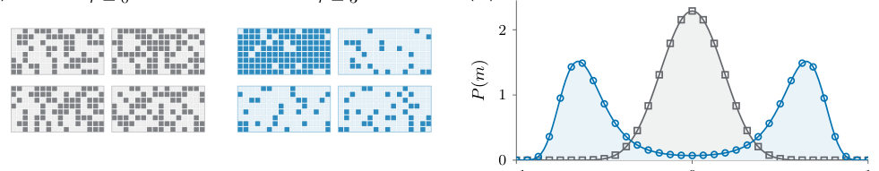
<figcaption class="paper-figure-caption"><b>Fig 1.</b> FIG. 1. Dephasing-enhanced response and stationary ordering at fixed programmed weights. (a) Single-spin Bloch trajectories at a fixed conditional field, showing the dephasing-induced change in the stationary polarization. (b) Stationary Curie–Weiss branches, m = m∗(Km). The target orders at Kc = 1, whereas dephasing shifts the sampler threshold to Kc(r) &lt; 1. (c) Four computational-basis samples at N = 128 and K = 0.75, showing disordered configurations without dephasing and ordered configurations with dephasing. (d) Stationary magnetization distributions at the same N and K: the target remains unimodal around m = 0, whereas the dephased sampler is bimodal. Throughout, the dephased sampler...</figcaption>
</figure>
<figure class="paper-figure-card">
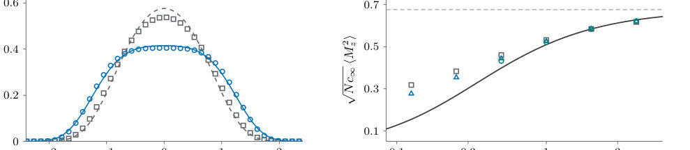
<figcaption class="paper-figure-caption"><b>Fig 2.</b> FIG. 2. Residual coherence narrows the critical stationary distribution. (a) Magnetization distributions at the fully dephased critical coupling K∞= 1/(1 + s), with s = 0.8. Lines give the limiting densities pA0,ρ for ρ = r/ √</figcaption>
</figure>
<figure class="paper-figure-card">
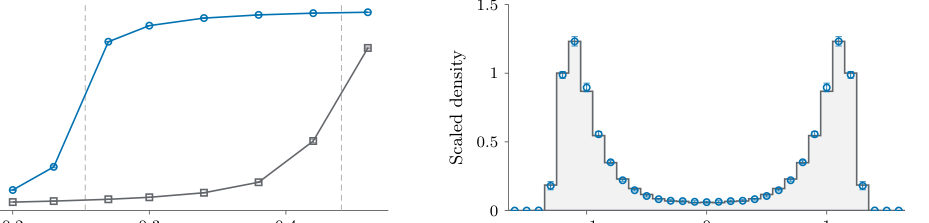
<figcaption class="paper-figure-caption"><b>Fig 3.</b> FIG. 3. Spatial order in the strong-dephasing process of Eq. (11). (a) Magnetization magnitudes for the noisy sampler and target Ising process on the same 32 × 32 lattice. Vertical lines mark their thermodynamic critical couplings; between them, the sampler is ordered and the target is disordered. (b) Standardized magnetization distributions on a 64 × 64 torus, comparing the noisy sampler at J = 0.2530 with the equilibrium Ising model at its own critical coupling. The sampler has s = 0.8. Bars are independent-run bootstrap errors, including uncertainty in the normalization. The SM gives critical exponents, moment ratios, and finite-size analysis.</figcaption>
</figure>
</div>

<p><strong>Summary.</strong> This work analyzes quantum Boltzmann samplers to understand how environmental dephasing drives the system into ordered phases, even when the desired target distribution is disordered. By analyzing the master equation and critical fluctuations, the authors establish a finite transition point and derive the scaling behavior of the magnetization near criticality. This shows that quantum noise can fundamentally alter the phase transition landscape of complex interacting quantum systems.</p>
<p><strong>Why it may be interesting.</strong> The study provides a concrete, quantum-mechanical framework for understanding how noise (dephasing) can induce order or drive phase transitions in complex many-body systems, linking quantum dynamics to classical critical phenomena.</p>
<details>
<summary>Detailed structure</summary>
<p><strong>Main problem.</strong> The paper investigates how dephasing affects the response and phase transitions in quantum Boltzmann samplers, especially when the underlying target probability distribution is disordered.</p>
<p><strong>Main result.</strong> Dephasing can drive the quantum sampler into an ordered phase even if the target distribution is disordered, and the critical fluctuations retain a finite imprint of coherence.</p>
<p><strong>Method.</strong> The analysis involves deriving and solving the master equation governing the density matrix evolution, linearizing around fixed points, and using scaling arguments near criticality.</p>
<p><strong>Model / system.</strong> The system is a quantum Boltzmann sampler modeled by interacting spins ($\sigma_i = \pm 1$) whose dynamics are governed by a master equation incorporating engineered dissipative updates and phase noise ($\gamma$).</p>
<p><strong>Key observables.</strong> Magnetization distribution (transition from unimodal to bimodal), rescaled magnetization $X_N$, and critical exponents ($
u, eta/
u, \gamma/
u$).</p>
<p><strong>Important parameters / regimes.</strong> Dephasing strength ($\gamma$), coupling strength ($K$), and the ratio $r = \gamma / [
u(1 - s^2)]$.</p>
<p><strong>Assumptions / limitations.</strong> The analysis relies on deriving the stationary law via generator methods and assuming local update costs are independent of the state.</p>
<p><strong>Figures summary.</strong> Figures illustrate the transition from disordered to ordered phases via Bloch trajectories and show the convergence of critical stationary distributions.</p>
<p><strong>Paper structure.</strong> The paper progresses by establishing the dynamics via a master equation, analyzing local and collective responses, determining the critical thresholds, and finally deriving the stationary law for the rescaled magnetization in the critical limit.</p>
</details>
<details>
<summary>Abstract</summary>
<p>Dephasing can drive a quantum Boltzmann sampler into an ordered phase while its programmed probability distribution remains disordered. We trace this transition to an enhanced conditional response: coherence loss changes how each spin responds to its neighbors, and interactions amplify the change. For all-to-all coupling, we establish the stationary transition at finite dephasing. Near criticality, the magnetization distribution depends on the ratio of dephasing strength to the square root of system size, retaining a finite imprint of coherence even as the local coherent correction vanishes. In the strong-dephasing limit on a square lattice, the dynamics generates effective multispin interactions and probability currents, with Ising-like critical statistics. Adjusting the local dissipative update restores the target probability process on arbitrary graphs.</p>
</details>
<p><sub><a href="#top">↑ back to top</a></sub></p>

<p><a id="paper-2609.19808"></a></p>
<h3 id="observation-of-multiphoton-entanglement-in-resonance-fluoresce"><a href="http://arxiv.org/abs/2609.19808v1">Observation of multiphoton entanglement in resonance fluoresce</a></h3>
<p><strong>Authors:</strong> Xiao-Long Zhou, Jian Wang, Ze-Min Shen, Dong-Yu Huang, Si-Jian He, Qi-Yang Huang, Yi-Jia Liu, Yu-Shu Chen, Quan Jiang, Chuan-Feng Li, Guang-Can Guo<br>
<strong>Type:</strong> experiment · <strong>Category:</strong> other · <strong>PDF:</strong> <a href="https://arxiv.org/pdf/2609.19808v1">https://arxiv.org/pdf/2609.19808v1</a><br>
<strong>Analysis basis:</strong> full PDF text, analyzed in chunks
<strong>Topic relevance:</strong> 🔥 <code>quantum optics experiment</code> <strong>4/5</strong> · <code>QC/QI experiment</code> <strong>3/5</strong> · <code>interference shaping light</code> <strong>3/5</strong> · <code>Tavis-Cummings &amp; cavity-many-emitter</code> <strong>2/5</strong> · <code>quantum measurements</code> <strong>2/5</strong> · <code>Full counting statistics</code> <strong>1/5</strong> · <code>analog quantum simulation</code> <strong>1/5</strong> · <code>correlated / nonlocal dissipation</code> <strong>1/5</strong> · <code>driven-dissipative phase transition</code> <strong>1/5</strong> · <code>methods for driven-dissipative</code> <strong>1/5</strong></p>
<div class="figure-strip-hint">↔ Scroll figures horizontally</div>
<div class="paper-figures-scroll">
<figure class="paper-figure-card">
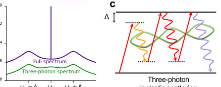
<figcaption class="paper-figure-caption"><b>Fig 1.</b> FIG. 1. Resonance fluorescence in the Heitler regime. a, Interference of mean field and quantum fluctuation re- sults in the observation of single-photon emission. b, Inten- sity spectrum of resonance fluorescence under detuned Heitler regime. The mean field spectrum is a delta-like function cen- tered at driving laser frequency ωL, The quantum fluctuation spectrum comprises three Lorentzian peaks: two sidebands at ωL ± ∆with widths Γ, and a weak central carrier at ωL of width 2Γ. The weakness of the carrier’s intensity is due to the absence of this component in two-photon scattering. c, Three-photon inelastic scattering involving three virtual en- ergy levels.</figcaption>
</figure>
<figure class="paper-figure-card">
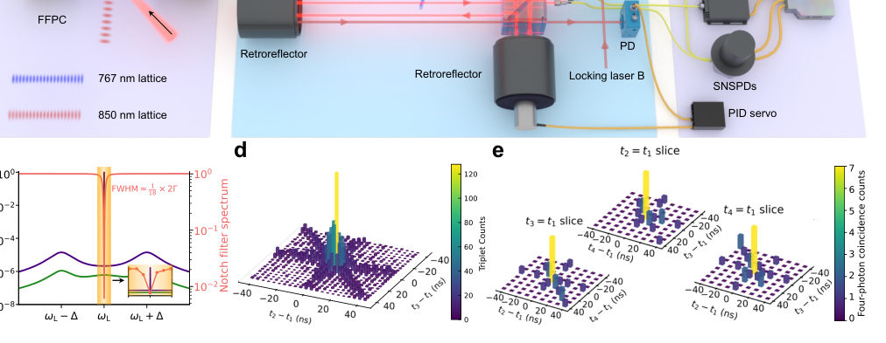
<figcaption class="paper-figure-caption"><b>Fig 2.</b> FIG. 2. Experimental setup and observation of three- and four-order photon bunching. a, A single 87Rb atom is trapped at the center of the optical cavity by a two-dimensional optical lattice formed by 850 nm and 796 nm laser beams. The atom is continuously driven by two red-detuned laser beams counter-propagating at an angle. The scattered light from the atom is efficiently collected by the fiber-coupled cavity and guided through the fiber to the measurement setup. b, The scattered light is first sent to a narrow-linewidth notch filter cavity to isolate the quantum fluctuation field, and then directed into a three-photon Franson interferometer for entanglement analysis. For visual clarity,...</figcaption>
</figure>
<figure class="paper-figure-card">
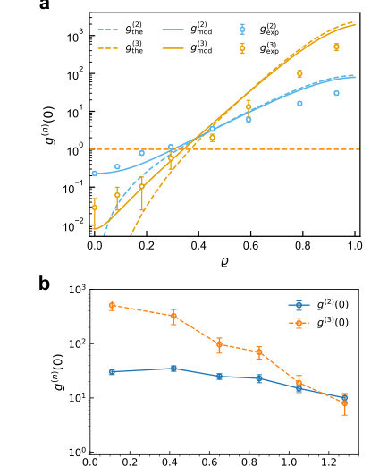
<figcaption class="paper-figure-caption"><b>Fig 3.</b> FIG. 4. Evolution of photon correlations at zero time delay with mean-field suppression ratio and notch fil- ter linewidth. a, Measured second- and third-order photon correlations for different mean field suppression ratio. Blue (orange) circles represent the second- (third-) order correla- tion data, while the corresponding dashed (solid) lines de- note the ideal (corrected) theoretical model. In the corrected model, rare multi-atom events (6% probability with another atom trapped) and background noise of ∼200 counts per second are taken into account. b, Second and third-order correlations for different notch filter linewidth.</figcaption>
</figure>
<figure class="paper-figure-card">
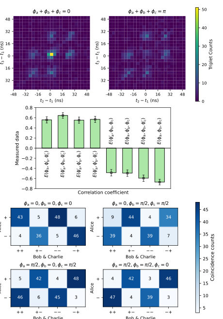
<figcaption class="paper-figure-caption"><b>Fig 4.</b> FIG. 3. Violation of three-photon Svetlichny’s inequal- ity and a data set of quantum secret sharing. a, 2D histogram of photon arrival time differences accumulated over 24 hours for the three channels of the Franson inter- ferometer. The six side peaks arise from events where the three photons do not all travel along the same arm, while the central peak originates from the coherent superposition of |l, l, l⟩and |s, s, s⟩, which are indistinguishable. The in- terference in the central peak depends on the total phase cos(ϕa + ϕb + ϕc), showing constructive (destructive) inter- ference when the phase equals 0 (π). b, The correlation coef- ficients that constitute the Svetlichny parameter...</figcaption>
</figure>
</div>

<p><strong>Summary.</strong> This paper experimentally reveals that resonance fluorescence from a single atom exhibits a multiphoton scattering nature, intrinsically generating multiphoton entanglement. By isolating quantum field fluctuations in a cavity QED setup, the authors confirmed genuine tripartite entanglement by violating Svetlichny's inequality. This establishes a simple platform for generating entangled states useful for quantum information processing.</p>
<p><strong>Why it may be interesting.</strong> This work provides a fundamentally simple, cavity-enhanced route to generate high-order entangled states directly from a well-understood process (resonance fluorescence), which is highly relevant for quantum optics and quantum information applications.</p>
<details>
<summary>Detailed structure</summary>
<p><strong>Main problem.</strong> To experimentally investigate the multiphoton scattering nature of resonance fluorescence, which is expected to generate intrinsic multiphoton entanglement, as higher-order processes have remained unexplored.</p>
<p><strong>Main result.</strong> The authors experimentally demonstrated the multiphoton scattering nature, confirming genuine tripartite entanglement via the violation of Svetlichny's inequality, and showed this source can implement a quantum secret sharing protocol.</p>
<p><strong>Method.</strong> The experiment uses a single two-level emitter coupled to a cavity, employing a notch filter to isolate quantum fluctuations and measuring higher-order correlations using a Franson-type interferometer.</p>
<p><strong>Model / system.</strong> The system is a single two-level quantum emitter (e.g., $^{87}	ext{Rb}$ atom) interacting with near-resonant coherent light within a Fabry–Pérot cavity. The analysis focuses on the quantum fluctuation field ($\hat{\epsilon}$) resulting from the scattering process.</p>
<p><strong>Key observables.</strong> Three-photon bunching ($g^{(3)}(0)$), violation of Svetlichny’s inequality ($    ext{SSve} &gt; 4$), and correlation measurements as a function of the mean-field suppression ratio ($\varrho$).</p>
<p><strong>Important parameters / regimes.</strong> The experiment operates in the detuned Heitler regime ($s \ll 1$) and relies on suppressing the mean field ($\alpha$) to isolate the quantum fluctuations ($\hat{\epsilon}$).</p>
<p><strong>Assumptions / limitations.</strong> The analysis assumes the ability to effectively suppress the strong mean field ($\alpha$) using optical filtering to probe the weak quantum fluctuation field ($\hat{\epsilon}$).</p>
<p><strong>Figures summary.</strong> Figures illustrate the field decomposition into mean and fluctuation components, the experimental setup involving the cavity and three-photon interferometer, and quantitative results showing the violation of the Svetlichny inequality and the QSS protocol implementation.</p>
<p><strong>Paper structure.</strong> The paper establishes the theoretical framework by decomposing the scattered field, details the experimental setup using cavity QED and filtering, presents measurements of higher-order correlations, confirms entanglement via inequality violation, and concludes with a demonstration of a quantum information application (QSS).</p>
</details>
<details>
<summary>Abstract</summary>
<p>Resonance fluorescence, the process in which a single two-level quantum emitter interacts with a near-resonant coherent light, is a cornerstone of quantum optics as a paradigmatic light-matter interaction. Quantum phenomena in resonance fluorescence have been accounted for in terms of one- and two-photon processes; however, the physical processes arising from the interaction of a single two-level atom with higher photon numbers remain unexplored experimentally. Here we experimentally reveal the multiphoton scattering nature of resonance fluorescence, which intrinsically gives rise to multiphoton entanglement. By accessing quantum fluctuations in the field emitted from a cavity-quantum electrodynamics system, we resolve third- and fourth-order photon scattering events from a single two-level atom. In the three-photon component, the scattered photons are shown to be genuinely energy-time entangled, as verified by a violation of Svetlichny's inequality. As a demonstration of an application, a quantum secret sharing protocol (QSS) is implemented using this entangled photon source. Our study refines the descriptive framework of resonance fluorescence and broadens the scope of its investigation. It also establishes a fundamentally simple route for generating multiphoton entangled states for quantum information processing and quantum metrology.</p>
</details>
<p><sub><a href="#top">↑ back to top</a></sub></p>

<p><a id="paper-2609.19251"></a></p>
<h3 id="theory-of-post-selected-entanglement-transitions-in-monitored-bosons"><a href="http://arxiv.org/abs/2609.19251v1">Theory of post-selected entanglement transitions in monitored bosons</a></h3>
<p><strong>Authors:</strong> Ilia Komissarov, Emanuele G. Dalla Torre, Ahana Chakraborty<br>
<strong>Type:</strong> theory · <strong>Category:</strong> statistical mechanics · <strong>PDF:</strong> <a href="https://arxiv.org/pdf/2609.19251v1">https://arxiv.org/pdf/2609.19251v1</a><br>
<strong>Analysis basis:</strong> full PDF text, analyzed in chunks
<strong>Topic relevance:</strong> 🔥 <code>quantum measurements</code> <strong>4/5</strong> · <code>Keldysh / 2PI / non-Gaussian methods</code> <strong>3/5</strong> · <code>driven-dissipative phase transition</code> <strong>3/5</strong> · <code>analog quantum simulation</code> <strong>2/5</strong> · <code>correlated / nonlocal dissipation</code> <strong>2/5</strong> · <code>methods for driven-dissipative</code> <strong>2/5</strong> · <code>non-equilibrium universality</code> <strong>2/5</strong> · <code>Full counting statistics</code> <strong>1/5</strong></p>
<div class="figure-strip-hint">↔ Scroll figures horizontally</div>
<div class="paper-figures-scroll">
<figure class="paper-figure-card">
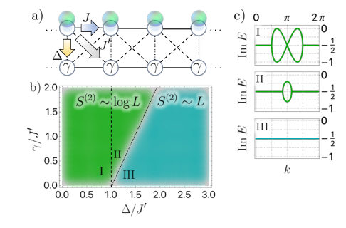
<figcaption class="paper-figure-caption"><b>Fig 1.</b> Figure 1. (a) We consider non-interacting bosons hopping on a 1D cross-stitch lattice described by the Hamiltonian (37) and initialized in a Fock state with the top (A) sublattice singly occupied by bosons represented by the spheres. The bottom (B) sublattice hosts constant imaginary on-site potentials γ, modeling the post-selected no-click trajectory of the quantum jump protocol (4). (b) The phase diagram exhibits two phases distinguished by the scaling of the steady-state entanglement. The phase with logarithmic scaling of the late-time bipartite second R´enyi entropy S(2) L/2 (7) is shown in green (regions I</figcaption>
</figure>
<figure class="paper-figure-card">
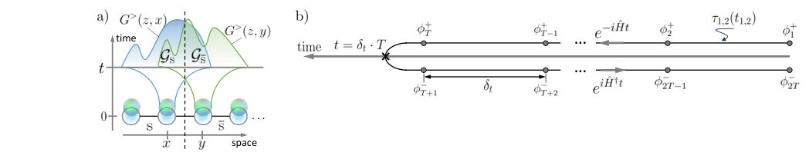
<figcaption class="paper-figure-caption"><b>Fig 2.</b> Figure 2. a) Initially localized bosons, represented by green spheres, are evolved using the Green’s function ˆG&gt;, forming extended probability density clouds, shown in blue and green spatial profiles. The overlaps Gs(x, y), Gs(x, y) (see (12)) of the wave functions to the left and to the right of the bipartition, indicated with the dashed line, give rise to the finite entanglement entropy in the system (30). The entropy is maximized when the overlaps are equal on both sides of the bipartition, thereby maximizing the uncertainty in particle positions. b) Keldysh time contour corresponding to the discretization of the time evolution of the density matrix ˆρ(t) = ei ˆ H† eff tˆρ(0)e−i ˆ Heff...</figcaption>
</figure>
<figure class="paper-figure-card">
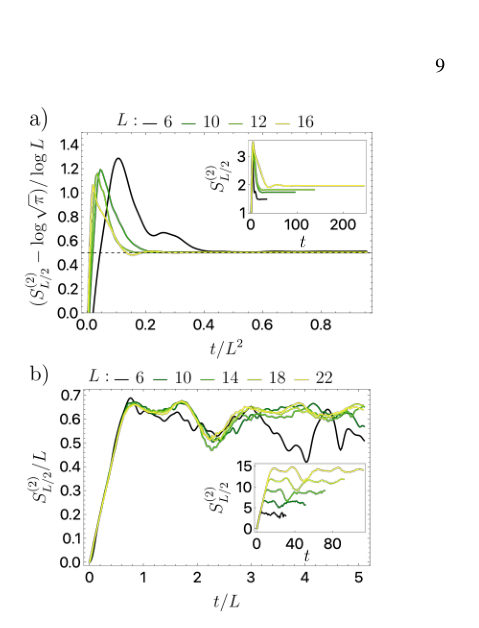
<figcaption class="paper-figure-caption"><b>Fig 3.</b> Figure 4. (a), (b): Bipartite R´enyi entanglement entropy as a func- tion of time for different sizes of the system L corresponding to the S(2) ∼log L (a) and S(2) ∼L (b) regions (see the phase diagram in Fig. 1b). The figures showcase the collapse of the curves, rescaled by the system length L, while the insets show the raw data. (a) The linear in time entropy build-up phase is followed by the decay of all but one mode. The entanglement follows the predicted S(2) ≃ 1 2 log(πL) large-L behavior already for very small system sizes (see Appendix E). The parameters used are ∆= J = J′/2, γ = 0.3J′, and S(2) is obtained by the brute-force evaluation of the permanents in (30). (b) After the...</figcaption>
</figure>
<figure class="paper-figure-card">
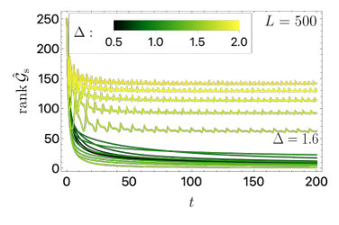
<figcaption class="paper-figure-caption"><b>Fig 4.</b> Figure 5. The late-time effective rank (33) of the Green’s function contraction Gs entering the numerator in (30) is indicative of the measurement-induced phase transition. All curves correspond to γ = J′ = 2J. When ∆≤1.5, rank Gs approaches 1 due to the decay of all but a single eigenmode in the system, while ∆&gt; 1.5 corresponds to the finite O(L) values of the late-time effective rank.</figcaption>
</figure>
</div>

<p><strong>Summary.</strong> This theoretical paper develops a novel Keldysh field-theoretic approach to study entanglement in monitored bosonic systems. It demonstrates that measurement monitoring can induce a phase transition in entanglement scaling, moving from volume-law to logarithmic scaling. This transition is fundamentally linked to the condensation of bosons into a finite set of slowest-decaying modes.</p>
<p><strong>Why it may be interesting.</strong> This work provides a powerful, analytically tractable tool to study measurement-induced dynamics in bosonic systems, linking spectral theory (non-Hermitian spectrum) directly to macroscopic entanglement properties.</p>
<details>
<summary>Detailed structure</summary>
<p><strong>Main problem.</strong> The paper addresses the poorly understood realization of entanglement phase transitions in bosonic systems with unbounded local occupation numbers, driven by quantum measurements.</p>
<p><strong>Main result.</strong> It establishes a distinct mechanism showing a transition from volume-law to logarithmic entanglement scaling in monitored bosonic systems, controlled by the restructuring of the non-Hermitian spectrum.</p>
<p><strong>Method.</strong> The authors develop a replica-free Keldysh field-theoretic framework to calculate the Rényi entropy, expressing it in terms of permanents of matrices constructed from single-particle Green's functions.</p>
<p><strong>Model / system.</strong> The study focuses on non-interacting bosons on a one-dimensional cross-stitch lattice undergoing continuous monitoring (post-selection on the no-click trajectory). The dynamics are governed by an effective non-Hermitian Hamiltonian.</p>
<p><strong>Key observables.</strong> Rényi entropy ($S$), entanglement scaling (Volume-law vs. Logarithmic scaling), and the structure of the non-Hermitian spectrum (number of long-lived modes).</p>
<p><strong>Important parameters / regimes.</strong> Monitoring rate ($\gamma$), system size ($L$), and the nature of the initial state (Fock states).</p>
<p><strong>Assumptions / limitations.</strong> The analysis is restricted to non-interacting bosons, and the framework is designed to handle non-Gaussian initial states.</p>
<p><strong>Figures summary.</strong> Figure 1 illustrates the lattice setup and a phase diagram showing the transition between logarithmic and volume-law scaling regions marked by an exceptional point. Other figures detail the spectral properties linking the scaling regimes.</p>
<p><strong>Paper structure.</strong> The paper develops the field-theoretic formalism, applies it to the monitored bosonic lattice, and analyzes the resulting entanglement scaling based on the spectral properties of the effective non-Hermitian Hamiltonian.</p>
</details>
<details>
<summary>Abstract</summary>
<p>Entanglement phase transitions driven by quantum measurements have emerged as a central paradigm in open quantum many-body physics. Such phase transitions are well established for systems with finite local Hilbert-space dimensions, such as qubits and fermions, while their realization in bosonic systems with unbounded local occupation numbers remains poorly understood. Even in the absence of interactions, number states of bosons are intrinsically non-Gaussian, preventing the use of standard correlation-matrix approaches. To address this problem, we develop a replica-free Keldysh field-theoretic framework that expresses the Renyi entropy of bosonic systems initialized in on-site Fock states in terms of permanents of matrices constructed from single-particle Green's functions. Applying this framework to a continuously monitored one-dimensional cross-stitch lattice conditioned on the no-click trajectory, we uncover a transition from volume-law to logarithmic entanglement scaling. We show that the transition is controlled by a restructuring of the non-Hermitian spectrum that changes the number of long-lived modes from extensive to finite. In the strongly monitored regime, bosons dynamically condense into a microscopic number of slowest-decaying modes, producing logarithmic entanglement scaling, whereas an extensive manifold of long-lived modes at weak monitoring gives rise to volume-law entanglement. Our results establish a distinct mechanism for measurement-induced entanglement transitions in free bosonic systems and provide a computationally efficient diagnostic of the measurement-induced bosonic condensation.</p>
</details>
<p><sub><a href="#top">↑ back to top</a></sub></p>

<p><a id="paper-2609.20148"></a></p>
<h3 id="exceptional-points-and-jordan-chain-signatures-in-quantum-first-passage-statistics"><a href="http://arxiv.org/abs/2609.20148v1">Exceptional points and Jordan-chain signatures in quantum first-passage statistics</a></h3>
<p><strong>Authors:</strong> Lachlan Bridges<br>
<strong>Type:</strong> theory · <strong>Category:</strong> other · <strong>PDF:</strong> <a href="https://arxiv.org/pdf/2609.20148v1">https://arxiv.org/pdf/2609.20148v1</a><br>
<strong>Analysis basis:</strong> full PDF text, analyzed in chunks
<strong>Topic relevance:</strong> 🔥 <code>quantum measurements</code> <strong>4/5</strong> · <code>Full counting statistics</code> <strong>3/5</strong> · <code>correlated / nonlocal dissipation</code> <strong>3/5</strong> · <code>driven-dissipative phase transition</code> <strong>3/5</strong> · <code>methods for driven-dissipative</code> <strong>2/5</strong> · <code>non-equilibrium universality</code> <strong>2/5</strong> · <code>Keldysh / 2PI / non-Gaussian methods</code> <strong>1/5</strong></p>
<div class="figure-strip-hint">↔ Scroll figures horizontally</div>
<div class="paper-figures-scroll">
<figure class="paper-figure-card">
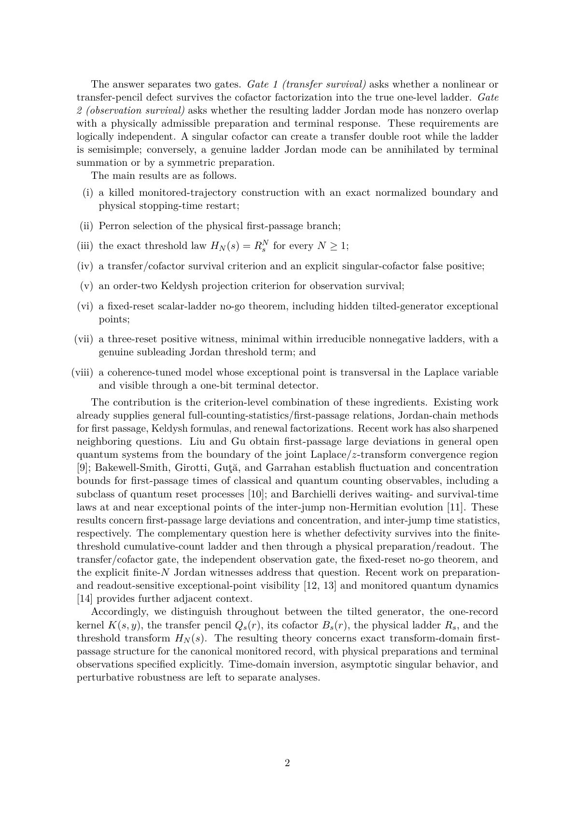
<figcaption class="paper-figure-caption"><b>Fig 1.</b> Low-resolution page preview, page 2</figcaption>
</figure>
<figure class="paper-figure-card">
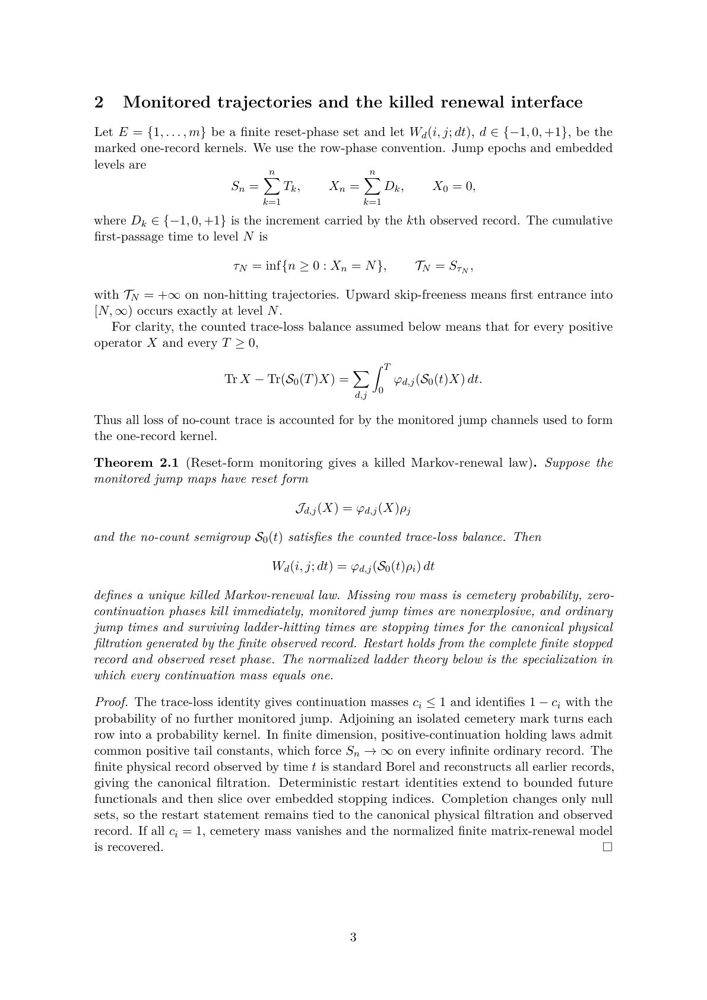
<figcaption class="paper-figure-caption"><b>Fig 2.</b> Low-resolution page preview, page 3</figcaption>
</figure>
<figure class="paper-figure-card">
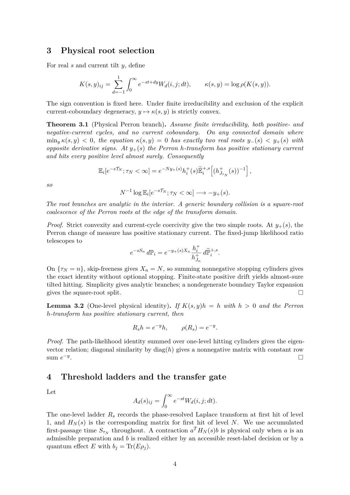
<figcaption class="paper-figure-caption"><b>Fig 3.</b> Low-resolution page preview, page 4</figcaption>
</figure>
<figure class="paper-figure-card">
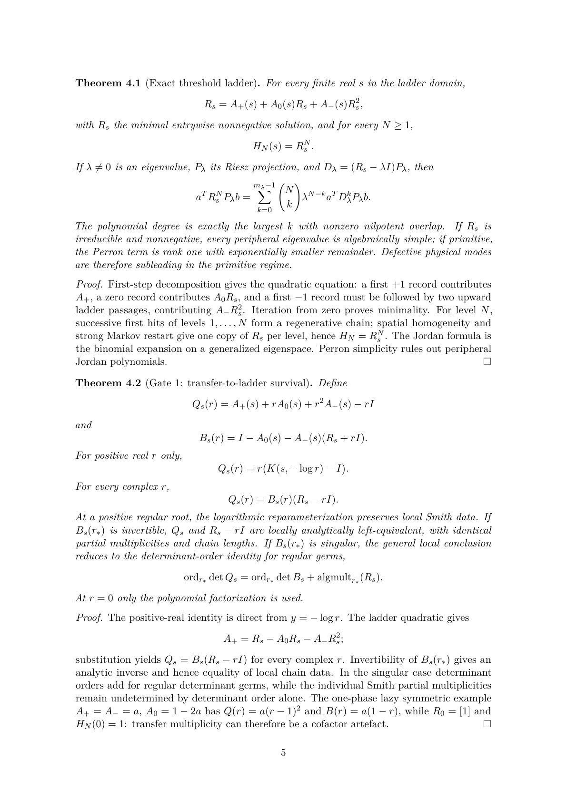
<figcaption class="paper-figure-caption"><b>Fig 4.</b> Low-resolution page preview, page 5</figcaption>
</figure>
<figure class="paper-figure-card">
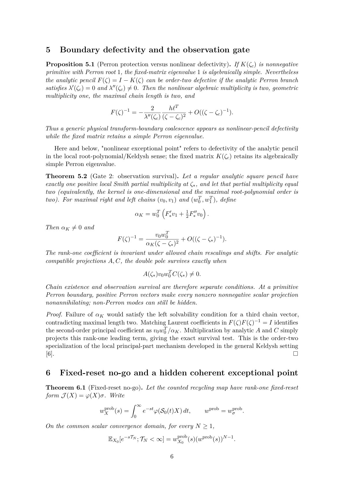
<figcaption class="paper-figure-caption"><b>Fig 5.</b> Low-resolution page preview, page 6</figcaption>
</figure>
</div>

<p><strong>Summary.</strong> This theoretical paper rigorously analyzes how spectral singularities, or exceptional points, manifest in the statistics of first-passage times for open quantum systems. Using advanced transform-domain techniques, the authors derive exact factorization theorems and establish fundamental no-go theorems regarding the relationship between generator defectivity and observable Jordan polynomial signatures. It provides a powerful mathematical framework for understanding measurement-induced spectral properties.</p>
<p><strong>Why it may be interesting.</strong> This work provides deep mathematical tools for characterizing non-Hermitian spectral singularities (exceptional points) in the context of open quantum dynamics, which is crucial for understanding measurement back-action and quantum control.</p>
<details>
<summary>Detailed structure</summary>
<p><strong>Main problem.</strong> The paper investigates the mathematical conditions under which exceptional point signatures, arising from nonlinear spectral defectivity, survive and manifest in physical quantum first-passage time statistics.</p>
<p><strong>Main result.</strong> The authors establish exact threshold factorizations ($H_N(s) = R_N^s$) and prove a fixed-reset no-go theorem, showing that defective generators do not necessarily yield defective cumulative-count Jordan polynomials.</p>
<p><strong>Method.</strong> The analysis is highly mathematical, utilizing exact transform-domain structure (Laplace/z-transforms), spectral theory for analytic matrix pencils, and renewal theory applied to monitored quantum processes.</p>
<p><strong>Model / system.</strong> The study concerns open quantum systems monitored via quantum jumps, specifically focusing on finite reset-form monitored systems with upward-skip-free counting processes.</p>
<p><strong>Key observables.</strong> Quantum first-passage-time distributions, threshold ladders ($R_s$), transfer factorizations ($Q_s(r)$), and the detection of Jordan-chain signatures (polynomial factors like $N\lambda^N$).</p>
<p><strong>Important parameters / regimes.</strong> The analysis depends on the system being within the finite reset-form monitored-quantum and finite upward-skip-free matrix-renewal class.</p>
<p><strong>Assumptions / limitations.</strong> The analysis is formulated at the level of exact transform-domain structure, explicitly separating this from time-domain asymptotics and perturbative robustness.</p>
<p><strong>Paper structure.</strong> The paper builds from analyzing the survival of defectivity from the transfer pencil to the physical ladder, deriving exact factorization theorems, proving the no-go theorem for defective generators, and concluding with the construction of a minimal witness model.</p>
</details>
<details>
<summary>Abstract</summary>
<p>Exceptional-point signatures in first-passage observables are governed by two independent survival mechanisms: nonlinear spectral defectivity must pass from the one-record or transfer description to the physical one-level first-passage ladder, and the resulting ladder Jordan mode must have nonzero overlap with the chosen preparation and terminal observation. For finite reset-form monitored quantum systems with upward-skip-free counting, we prove the exact threshold factorization $H_N(s)=R_s^N$, identify the physical Perron branch, and derive the transfer factorization $Q_s(r)=B_s(r)(R_s-rI)$. Invertibility of the cofactor gives local equality of Smith data, whereas a singular cofactor can contribute transfer multiplicity absent from the ladder. An order-two Keldysh formula yields an independent observation gate. We then prove a fixed-reset no-go theorem: even a defective full tilted generator cannot generate a cumulative-count Jordan polynomial when the post-count ladder is scalar. Finally, we construct a three-reset monitored-Lindblad witness, minimal within irreducible nonnegative ladders, with a genuine subleading $Nλ^N$ threshold term and a coherence-tuned model in which a binary terminal effect retains the exact polynomial signature at a transversal transform-domain exceptional point. The analysis is formulated at the level of exact transform-domain structure; time-domain asymptotics and perturbative robustness remain separate questions.</p>
</details>
<p><sub><a href="#top">↑ back to top</a></sub></p>

<p><a id="paper-2609.19292"></a></p>
<h3 id="universal-suppression-of-dissipation-across-conformal-interface-in-open-quantum-critical-systems"><a href="http://arxiv.org/abs/2609.19292v1">Universal Suppression of Dissipation across Conformal Interface in Open Quantum Critical Systems</a></h3>
<p><strong>Authors:</strong> Ruhanshi Barad, Tian Wu, Qicheng Tang, Xueda Wen<br>
<strong>Type:</strong> theory · <strong>Category:</strong> statistical mechanics · <strong>PDF:</strong> <a href="https://arxiv.org/pdf/2609.19292v1">https://arxiv.org/pdf/2609.19292v1</a><br>
<strong>Analysis basis:</strong> full PDF text, analyzed in chunks
<strong>Topic relevance:</strong> 🔥 <code>non-equilibrium universality</code> <strong>4/5</strong> · <code>correlated / nonlocal dissipation</code> <strong>3/5</strong> · <code>driven-dissipative phase transition</code> <strong>3/5</strong> · <code>methods for driven-dissipative</code> <strong>3/5</strong> · <code>Keldysh / 2PI / non-Gaussian methods</code> <strong>2/5</strong> · <code>Frenkel-Kontorova</code> <strong>1/5</strong> · <code>analog quantum simulation</code> <strong>1/5</strong></p>
<div class="figure-strip-hint">↔ Scroll figures horizontally</div>
<div class="paper-figures-scroll">
<figure class="paper-figure-card">
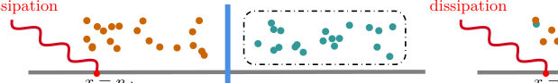
<figcaption class="paper-figure-caption"><b>Fig 1.</b> FIG. 1. Schematic illustration of the effect of a conformal interface on slowly relaxing modes. Local dissipation is introduced in the left half at x = nd, while a conformal interface is placed at the center of the system. In the perfectly reflecting limit, t = 0, half of the modes are localized in the nondissipative chain (green dots) and remain purely oscillating, while the other half are localized in the dissipative chain (orange dots) and decay with finite relaxation rates. For 0 &lt; t ≤1, the formerly oscillatory modes extend into the dissipative chain and therefore acquire finite relaxation rates. In this work, we focus on modes whose relaxation times scale as O(L3), which we refer to as...</figcaption>
</figure>
<figure class="paper-figure-card">
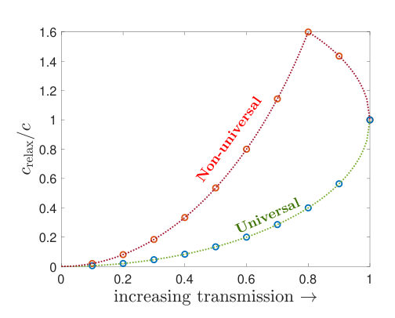
<figcaption class="paper-figure-caption"><b>Fig 2.</b> FIG. 2. crelax as a function of the interface transmission for the critical harmonic chain and the critical fermion chain. For cglobal relax , defined in terms of the Liouvillian gap accord- ing to Eq. (1.1), the result may coincide with crelax for some boundary conditions (green), but can become nonuniversal for others (red). See Sec. VI and Fig. 10 for details. In con- trast, the quantity crelax introduced in this work is universal (green).</figcaption>
</figure>
<figure class="paper-figure-card">
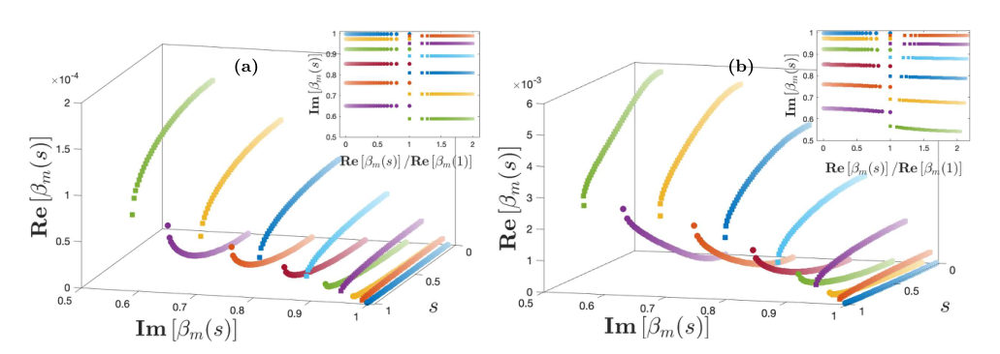
<figcaption class="paper-figure-caption"><b>Fig 3.</b> FIG. 3. Complex single-particle eigenspectrum of the critical harmonic chain with a conformal interface coupled to a local environment. For each mode m, the corresponding complex eigenvalue βm(s) is shown as the transmission parameter s is varied. The real part Re [βm(s)] &gt; 0 characterizes the relaxation rate, while the imaginary part Im [βm(s)] determines the coherent part of the mode evolution. Here, different colors label different modes, while different shades of the same color show how each mode evolves as s is varied from 1 to 0, with lighter shades corresponding to smaller values of s. Note, the curves separate into two distinct branches: the circle-marked curves, which bend downward,...</figcaption>
</figure>
<figure class="paper-figure-card">
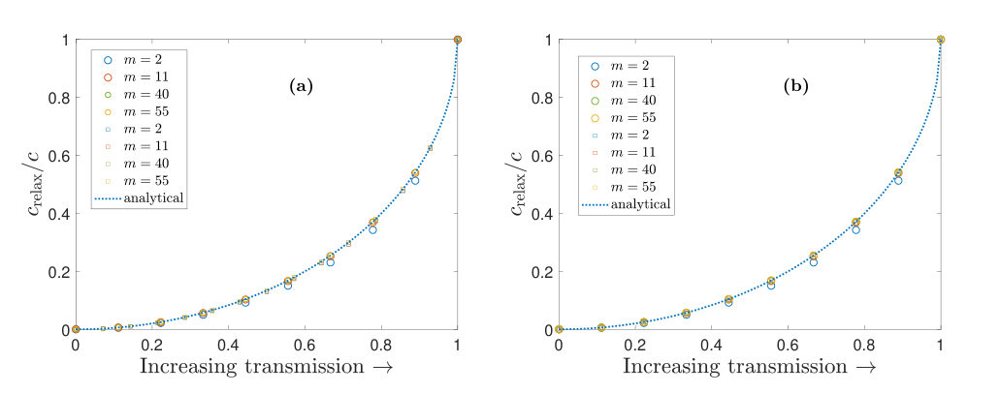
<figcaption class="paper-figure-caption"><b>Fig 4.</b> FIG. 4. Mode-resolved relaxation coefficient crelax in Eq.(1.4) for different modes in the weak-dissipation regime. Panel (a) shows free boundary conditions, while panel (b) shows fixed boundary conditions. Here, m denotes the mode index. For each panel, we consider two choices of boundary dissipation: circles correspond to local dissipation site nd in the left chain, while squares correspond to local dissipation site nd in the right chain.</figcaption>
</figure>
<figure class="paper-figure-card">
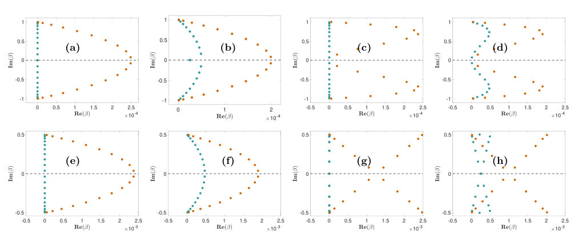
<figcaption class="paper-figure-caption"><b>Fig 5.</b> FIG. 5. (a−d) Rapidity spectrum {βi} for a harmonic chain of length N = 2L = 20. The local dissipation is introduced on the right boundary (i.e. nd = N) with interface parameter s and dissipation strengths (γl and γg, are set as: γl = 0.015 and γg = 0.01. We consider free boundary conditions in (a−b) and fixed boundary conditions in (c−d). In (a, c) we tune the conformal interface parameter s = 0 such that green dots show purely oscillating modes that do not decay or localized in non-dissipative chain. In (b, d), we tune s = 0.8 such that both modes have finite relaxation rate. (e−h) Rapidity spectrum {βi} for a fermionic chain of length N = 2L = 20. The local dissipation is introduced on the...</figcaption>
</figure>
</div>

<p><strong>Summary.</strong> This work addresses how dissipation behaves across a conformal interface in quantum critical systems. The authors introduce a mode-resolved relaxation coefficient that successfully captures the universal physics, resolving ambiguities found in previous global measures. This establishes a robust, universal framework for characterizing dissipation in open quantum systems at critical points.</p>
<p><strong>Why it may be interesting.</strong> It provides a rigorous, universal characterization of dissipation suppression across quantum interfaces, which is crucial for understanding non-equilibrium steady states in critical systems relevant to quantum optics and condensed matter.</p>
<details>
<summary>Detailed structure</summary>
<p><strong>Main problem.</strong> The paper investigates the role of conformal interfaces in characterizing dissipation and relaxation dynamics within open quantum critical systems.</p>
<p><strong>Main result.</strong> A newly defined mode-resolved relaxation coefficient ($c_{	ext{relax}}$) was shown to be universal, maintaining a consistent dependence on interface transmission regardless of microscopic details or boundary conditions.</p>
<p><strong>Method.</strong> The authors employed analytical and numerical calculations on critical harmonic and free-fermion chains, focusing on tracking individual relaxation modes rather than relying solely on the global Liouvillian gap.</p>
<p><strong>Model / system.</strong> The study models locally dissipative quantum critical chains connected by a conformal interface, analyzed using techniques derived from Lindblad master equations and non-Hermitian effective Hamiltonians.</p>
<p><strong>Key observables.</strong> Mode-resolved relaxation coefficient ($c_{	ext{relax}}$), global relaxation coefficient ($c_{	ext{global}}^{	ext{relax}}$), energy/information transmission coefficients ($c_{	ext{LR}}, c_{	ext{eff}}$).</p>
<p><strong>Important parameters / regimes.</strong> Interface transmission coefficient ($t$), dissipation strength ($\gamma$), and the weak-dissipation regime.</p>
<p><strong>Assumptions / limitations.</strong> The analysis relies on the applicability of mode-resolved tracking to resolve ambiguities found in global gap measurements.</p>
<p><strong>Figures summary.</strong> Figures compare the non-universal behavior of the global relaxation coefficient against the universal behavior of the mode-resolved coefficient as a function of interface transmission.</p>
<p><strong>Paper structure.</strong> The paper first establishes the problem of non-universality in global relaxation measures, then introduces the mode-resolved coefficient, and finally validates its universal behavior using specific critical chain models.</p>
</details>
<details>
<summary>Abstract</summary>
<p>Conformal interfaces provide an important setting for studying universal transmission phenomena in one-dimensional quantum critical systems. While energy and information transmission across such interfaces are characterized by universal quantities in closed systems, the corresponding role of conformal interfaces in dissipative dynamics is less understood. In this work, we study relaxation in locally dissipative quantum critical chains with a conformal interface and show that a universal characterization emerges at the level of individual relaxation modes. We first show that the relaxation coefficient defined in the recent work [1] from the Liouvillian gap can become non-universal for certain boundary conditions because the mode determining the smallest decay rate can change as the interface transmission is varied. To resolve this ambiguity, we introduce a mode-resolved relaxation coefficient $c_{\rm relax}$ by continuously tracking the same Liouvillian rapidity mode as a function of the interface transmission. Using analytical and numerical calculations for a critical harmonic chain and a critical free-fermion chain, we find that, in the weak-dissipation regime, $c_{\rm relax}$ follows the same universal dependence on the interface transmission in all cases considered, independent of microscopic details such as the boundary conditions, dissipation strength, and location of the local dissipation. For boundary dissipation, this universal behavior persists even at finite dissipation strength. Our results establish a universal mode-resolved characterization of relaxation across conformal interfaces in open quantum critical systems.</p>
</details>
<p><sub><a href="#top">↑ back to top</a></sub></p>

<p><a id="paper-2609.19807"></a></p>
<h3 id="90-efficient-optical-storage-in-a-rare-earth-crystal-with-a-low-loss-impedance-matched-cavity"><a href="http://arxiv.org/abs/2609.19807v1">90%-Efficient Optical Storage in a Rare-Earth Crystal with a Low-Loss Impedance-Matched Cavity</a></h3>
<p><strong>Authors:</strong> Weiye Sun, Fudong Wang, Mucheng Guo, Xiantong An, Zhenqi Xu, Zhehao Xu, Xingmin He, Matthew J. Sellars, Shuping Liu, and Manjin Zhong<br>
<strong>Type:</strong> experiment · <strong>Category:</strong> other · <strong>PDF:</strong> <a href="https://arxiv.org/pdf/2609.19807v1">https://arxiv.org/pdf/2609.19807v1</a><br>
<strong>Analysis basis:</strong> full PDF text, analyzed in chunks
<strong>Topic relevance:</strong> 🔥 <code>quantum optics experiment</code> <strong>4/5</strong> · <code>analog quantum simulation</code> <strong>3/5</strong> · <code>Tavis-Cummings &amp; cavity-many-emitter</code> <strong>2/5</strong> · <code>driven-dissipative phase transition</code> <strong>2/5</strong> · <code>QC/QI experiment</code> <strong>1/5</strong> · <code>correlated / nonlocal dissipation</code> <strong>1/5</strong> · <code>interference shaping light</code> <strong>1/5</strong> · <code>methods for driven-dissipative</code> <strong>1/5</strong> · <code>quantum measurements</code> <strong>1/5</strong></p>
<div class="figure-strip-hint">↔ Scroll figures horizontally</div>
<div class="paper-figures-scroll">
<figure class="paper-figure-card">
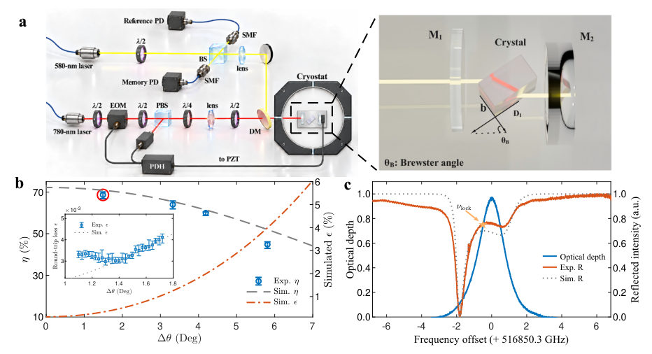
<figcaption class="paper-figure-caption"><b>Fig 1.</b> FIG. 1. a, Schematic of the experimental setup. A stabilized 780-nm laser is used for cavity locking, while a 580-nm laser is used for optical storage. The AFC preparation light and the input signal to be stored are coupled into the cavity along the same optical path. The enlarged view shows the storage cavity, with Eu3+:YSO crystal placed between a plane mirror (M1) and a concave mirror (M2). The Brewster angle θB is indicated. b, Measured storage efficiency (blue open circles), simulated storage efficiency (gray dashed curve), and simulated round-trip intracavity loss ϵ (orange dash-dotted curve) as functions of the angular deviation ∆θ from the Brewster angle. The simulations assume...</figcaption>
</figure>
<figure class="paper-figure-card">

<figcaption class="paper-figure-caption"><b>Fig 2.</b> Fig. 1(c) shows the cavity reflection together with the crystal optical-depth spectrum before AFC prepara- tion. The reflection reaches a minimum at a detuning of −1.8 GHz from the absorption center, where the crystal optical depth is approximately 0.11. The reflection min- imum corresponds to 99.4% cavity coupling efficiency, in good agreement with the calculated reflection spectrum (see Supplemental Materials for details).</figcaption>
</figure>
<figure class="paper-figure-card">

<figcaption class="paper-figure-caption"><b>Fig 3.</b> FIG. 2. Storage efficiency and phase coherence of the optical memory. a, Normalized input pulse (gray solid curve) and retrieved echo (blue solid curve) for an AFC tooth spacing of ∆= 1 MHz. The calibrated storage efficiency is η = 90.1(5)%. The center of the retrieved echo is delayed by approximately 0.05 µs relative to the nominal recall time of 1/∆= 1 µs. The orange dotted curve shows the simulated echo, with a predicted storage efficiency of 91.8%. b, Simulated AFC spectrum for ∆= 1 MHz and a finesse of FAFC = 18.1. The blue and orange curves show the imaginary and real parts of the optical susceptibility χ, respectively. The gray arrows indicate the optical depths dct and dpit. c,...</figcaption>
</figure>
<figure class="paper-figure-card">

<figcaption class="paper-figure-caption"><b>Fig 4.</b> FIG. 3. Bandwidth dependence of the optical memory. a, Storage efficiency η (left axis) and retrieved-echo bandwidth BWre (right axis) as functions of the input-pulse bandwidth BWin. As the input pulse becomes wider, the BWre (green circles) deviates from the linear region (gray dashed line), and η (red triangles) drops rapidly when the input pulse width exceeds 2 MHz. Simulated results are also given for η (blue solid line) and BWre (orange solid line). b, Measured temporal profiles of the input pulse (gray solid curve) and the leakage light and retrieved echo (blue solid curve) for an input-pulse bandwidth of BWin = 21 MHz. The orange dotted curve shows the simulated temporal profile,...</figcaption>
</figure>
<figure class="paper-figure-card">

<figcaption class="paper-figure-caption"><b>Fig 5.</b> Fig. 3(c) further isolates the influence of the residual optical depth dpit at the edge of the spectral pit. For dpit between 0.1 and 0.3, the storage efficiency remains above 50% for input bandwidths up to approximately 17–18 MHz, and can exceed 93% for BWin &lt; 6 MHz. As dpit increases, both the usable bandwidth and the maxi- mum storage efficiency decrease. These results show that residual absorption surrounding the AFC limits both ef- ficiency and bandwidth through its associated dispersive response. At the measured round-trip intracavity loss of 0.37%, even complete elimination of the residual crystal-surface reflection is expected to increase the storage efficiency by only about 1.5...</figcaption>
</figure>
</div>

<p><strong>Summary.</strong> This paper reports achieving 90.1% optical storage efficiency in a rare-earth-ion-doped crystal using a specialized, low-loss, impedance-matched cavity memory. By operating at cryogenic temperatures and optimizing the cavity geometry, the researchers minimized parasitic losses. Crucially, they determined that future improvements are limited by the fundamental properties of the atomic frequency comb preparation, not by residual optical losses.</p>
<p><strong>Why it may be interesting.</strong> This work directly addresses the practical realization of quantum memories in solid-state systems, which is a core area of research in cavity QED and quantum optics, providing crucial experimental benchmarks for theory.</p>
<details>
<summary>Detailed structure</summary>
<p><strong>Main problem.</strong> Achieving high-efficiency optical storage in rare-earth-ion-doped crystals is challenging due to weak optical absorption and high sensitivity to parasitic intracavity loss.</p>
<p><strong>Main result.</strong> The authors demonstrated a high storage efficiency of 90.1(5)% for coherent optical pulses using an impedance-matched cavity atomic-frequency-comb memory.</p>
<p><strong>Method.</strong> The experiment utilized a cryogenic, impedance-matched Fabry-Pérot cavity setup operating at the Brewster angle to minimize cavity losses.</p>
<p><strong>Model / system.</strong> The physical system is an atomic-frequency-comb (AFC) memory based on Eu3+:Y2SiO5 crystals. The efficiency is governed by impedance matching conditions involving cavity loss and AFC preparation parameters.</p>
<p><strong>Key observables.</strong> Measured storage efficiency ($\eta$), round-trip intracavity loss ($\epsilon$), and the retrieved echo temporal profile.</p>
<p><strong>Important parameters / regimes.</strong> Cryogenic temperature (3 K), low intracavity loss (0.37%), and the required impedance matching condition ($e_d \simeq 0.11$).</p>
<p><strong>Assumptions / limitations.</strong> The primary limitation to further efficiency gains is identified as the AFC preparation and its associated dispersive response, rather than residual cavity loss.</p>
<p><strong>Figures summary.</strong> Figures show the setup schematic, loss dependence on angle, the retrieved echo profile demonstrating 90.1% efficiency, and simulated AFC spectra showing spectral dependence.</p>
<p><strong>Paper structure.</strong> The paper presents the experimental setup and measurements, demonstrating the high efficiency achieved through loss mitigation. It then uses quantitative modeling to analyze the efficiency limits, concluding that AFC preparation imperfections are the main bottleneck.</p>
</details>
<details>
<summary>Abstract</summary>
<p>High-efficiency optical storage in rare-earth-ion-doped crystals is challenging because of their typically weak optical absorption,which makes cavity-enhanced memories highly sensitive to parasitic intracavity loss. Here we demonstrate a 90.1(5)% storage efficiency for coherent optical pulses in an impedance-matched cavity atomic-frequency-comb memory based on Eu3+:Y2SiO5. The Brewster-angle configuration of the crystal and fully cryogenic Fabry-Pérot cavity reduce the round-trip intracavity loss to 0.37%. Quantitative modeling shows that further improvement is limited primarily by AFC preparation and its associated dispersive response rather than by residual cavity loss,identifying the principal requirements for further approaching unity efficiency.</p>
</details>
<p><sub><a href="#top">↑ back to top</a></sub></p>

<p><a id="paper-2609.19260"></a></p>
<h3 id="hysteresis-in-atomic-josephson-junctions"><a href="http://arxiv.org/abs/2609.19260v1">Hysteresis in Atomic Josephson Junctions</a></h3>
<p><strong>Authors:</strong> Vijay Pal Singh, Ludwig Mathey, Luigi Amico<br>
<strong>Type:</strong> theory · <strong>Category:</strong> quantum gases · <strong>PDF:</strong> <a href="https://arxiv.org/pdf/2609.19260v1">https://arxiv.org/pdf/2609.19260v1</a><br>
<strong>Analysis basis:</strong> full PDF text, analyzed in chunks
<strong>Topic relevance:</strong> 🔥 <code>Keldysh / 2PI / non-Gaussian methods</code> <strong>4/5</strong> · <code>analog quantum simulation</code> <strong>3/5</strong> · <code>methods for driven-dissipative</code> <strong>3/5</strong> · <code>driven-dissipative phase transition</code> <strong>2/5</strong> · <code>non-equilibrium universality</code> <strong>2/5</strong> · <code>Frenkel-Kontorova</code> <strong>1/5</strong></p>
<div class="figure-strip-hint">↔ Scroll figures horizontally</div>
<div class="paper-figures-scroll">
<figure class="paper-figure-card">

<figcaption class="paper-figure-caption"><b>Fig 1.</b> FIG. 1. Hysteresis in atomic Josephson junctions (AJJs). (a) Simulation of the AJJ consisting of two 2D clouds separated by a Gaussian tunnel barrier of height V0 and width w (indicated by two vertical dotted lines). The barrier is displaced from xi to xf following x(t) = xi + ∆x sin2[πt/(2Ts)], where ∆x ≡xf −xi = 2v1Ts/π is the maximum displacement, Ts is the sweep time, and v1 is chosen to exceed the critical velocity vc. NL (NR) denotes the atom number of the left (right) reservoir. (b) Time evolution of the density difference ∆n(x, t) = n(x, t) −n(x), averaged over the initial ensemble and the y direction, for ˜V0 ≡V0/µ = 2, w = 1 µm, v1/vc ≈1.2, and Ts = 0.75 s. The dashed line...</figcaption>
</figure>
<figure class="paper-figure-card">

<figcaption class="paper-figure-caption"><b>Fig 2.</b> FIG. 2. Phase-slip-induced hysteresis dynamics. (a,b) Time evolution of the junction phase difference ∆ϕ obtained for βC = 37 from a single-trajectory AJJ simulation (a) and the RCSJ model (b). Blue (red) curve corresponds to increasing (decreasing) sweep protocol following the bias I(t) shown as a dashed line on the second axis. (c,d) I −∆z characteris- tics. The circle (square) denotes the switching (retrapping) current. We use Ts = 0.8 s (AJJ) and Ts/τ = 5500 (RCSJ).</figcaption>
</figure>
<figure class="paper-figure-card">

<figcaption class="paper-figure-caption"><b>Fig 3.</b> FIG. 3. Vortex dynamics. (a,b) Time evolution of the den- sity n(x) and the phase θ(x, Ly/2) along the x direction for a single sample and βC = 18. Vortices (triangles) and antivor- tices (circles) are identified from the phase winding near the line y = Ly/2. The barrier trajectory, with Ts = 0.4 ms and v1/vc ≃1.1, is indicated by the dotted line. (c) Ensemble- averaged total vortex number Nv as a function of time t/Ts and barrier height ˜V0. Maximum vortex number Nv,max and sweep time Ts correspond to each value of ˜V0. Circles (squares) represent switching (retrapping) velocities.</figcaption>
</figure>
<figure class="paper-figure-card">

<figcaption class="paper-figure-caption"><b>Fig 4.</b> FIG. 4. Retrapping current. (a,b) Hysteresis width hw = Is −Ir as a function of Ts on logarithmic scales for different βC, obtained from AJJ simulations (a) and the sRCSJ model (b). Solid lines are power-law fits to the late-time behavior, hw(Ts) ∼T −η s . (c) Ir/Ic as a function of βC. Solid lines show the RCSJ and sRCSJ predictions, while the dashed line denotes the asymptotic expression Ir/Ic ≃4/(π√βC).</figcaption>
</figure>
</div>

<p><strong>Summary.</strong> This research demonstrates the existence of hysteresis and retrapping in atomic Josephson junctions using bosonic superfluids. By simulating a velocity-sweep protocol, the authors show that these phenomena are governed by phase-slip dynamics, establishing a quantitative link between atomic and superconducting Josephson junction physics. This confirms that AJJs serve as a robust platform for studying fundamental non-equilibrium quantum dynamics.</p>
<p><strong>Why it may be interesting.</strong> This work directly bridges the physics of superconducting Josephson junctions with ultracold atomic systems, providing a clean, controllable platform (bosonic superfluids) to study fundamental non-equilibrium quantum dynamics like phase slips and hysteresis.</p>
<details>
<summary>Detailed structure</summary>
<p><strong>Main problem.</strong> The paper addresses the challenge of demonstrating and understanding hysteresis and retrapping phenomena in atomic Josephson junctions (AJJs), which are key signatures of underdamped Josephson dynamics.</p>
<p><strong>Main result.</strong> Hysteresis and retrapping are successfully demonstrated in AJJs, confirming that the dynamics are governed by persistent phase-slip mechanisms analogous to superconducting junctions.</p>
<p><strong>Method.</strong> The study employs classical-field simulations using a velocity-sweep protocol applied to a two-dimensional bosonic superfluid model.</p>
<p><strong>Model / system.</strong> The system is an Atomic Josephson Junction (AJJ) modeled using a semiclassical-field approach within the truncated Wigner approximation. The dynamics are compared against the Resistively and Capacitively Shunted Junction (RCSJ) model.</p>
<p><strong>Key observables.</strong> Hysteresis width, retrapping current, particle imbalance ($\Delta z$), and the junction response ($\Delta z$ vs. velocity $v$).</p>
<p><strong>Important parameters / regimes.</strong> Stewart–McCumber parameter ($eta_C$), critical current ($I_c$), and sweep time ($T_s$).</p>
<p><strong>Assumptions / limitations.</strong> The analysis relies on classical-field simulations and assumes the system can be mapped onto the RCSJ framework for comparison.</p>
<p><strong>Figures summary.</strong> Figures show time evolution of density difference, $\Delta z$ vs. barrier velocity $v$ curves demonstrating hysteresis, and the dependence of hysteresis width on sweep time.</p>
<p><strong>Paper structure.</strong> The paper introduces the AJJ system and the need to study hysteresis. It details the velocity-sweep protocol and simulation setup, presents the results showing hysteresis matching RCSJ predictions, and concludes by establishing a common phase-dynamical framework.</p>
</details>
<details>
<summary>Abstract</summary>
<p>Hysteresis and retrapping are hallmarks of underdamped Josephson dynamics, yet they have remained elusive in atomic Josephson junctions. Here, we introduce a velocity-sweep protocol to demonstrate these phenomena in the underdamped regime of an atomic Josephson junction. Specifically, using classical-field simulations of a two-dimensional bosonic superfluid, we show hysteresis in the velocity-imbalance characteristics and determine the retrapping current. The dynamics are quantitatively captured by the resistively and capacitively shunted junction (RCSJ) model. We show that hysteresis originates from persistent phase slips below the critical current, with the associated dissipation mediated by vortex-antivortex pair nucleation at the weak link. The retrapping current follows the Stewart-McCumber scaling of underdamped junctions, establishing a common phase-dynamical framework for atomic and superconducting Josephson junctions.</p>
</details>
<p><sub><a href="#top">↑ back to top</a></sub></p>

<p><a id="paper-2609.20597"></a></p>
<h3 id="lyapunov-controlled-thermalization-an-exact-real-time-example"><a href="http://arxiv.org/abs/2609.20597v1">Lyapunov-controlled thermalization: an exact real-time example</a></h3>
<p><strong>Authors:</strong> Jonas Loy, Jan C. Louw<br>
<strong>Type:</strong> theory · <strong>Category:</strong> statistical mechanics · <strong>PDF:</strong> <a href="https://arxiv.org/pdf/2609.20597v1">https://arxiv.org/pdf/2609.20597v1</a><br>
<strong>Analysis basis:</strong> full PDF text, analyzed in chunks
<strong>Topic relevance:</strong> 🔥 <code>Keldysh / 2PI / non-Gaussian methods</code> <strong>4/5</strong> · <code>methods for driven-dissipative</code> <strong>3/5</strong> · <code>non-equilibrium universality</code> <strong>3/5</strong> · <code>scars &amp; prethermalization</code> <strong>3/5</strong> · <code>analog quantum simulation</code> <strong>1/5</strong> · <code>driven-dissipative phase transition</code> <strong>1/5</strong></p>
<div class="figure-strip-hint">↔ Scroll figures horizontally</div>
<div class="paper-figures-scroll">
<figure class="paper-figure-card">

<figcaption class="paper-figure-caption"><b>Fig 1.</b> Figure 3. Relaxation of the energy density ϵ2(t) ∝ ⟨H0(t)⟩q2/N towards its post-quench equilibrium value ϵeq. 2 as the waiting time t = δt before the return quench increases (J = 1, c01 = c12 = 0.99, τ1 = 0). Dashed guides mark the three regimes: quadratic (11) at early times, algebraic (13) at intermediate times, and exponential (12) at late times, all corresponding to the low-temperature result. The higher temperature result in red has been provided to show fast thermalization relative to the T0 = 10−2 case. The ϵ2-axis is individually rescaled for comparison. Inset: distance to equilibrium on logarithmic axes, resolving the algebraic-to- exponential crossover.</figcaption>
</figure>
<figure class="paper-figure-card">

<figcaption class="paper-figure-caption"><b>Fig 2.</b> Figure 4. Partition of the (t1, t2)-plane into blocks Ia × Ib. The continuity boundary conditions (28) are imposed on the blue connecting lines. The green arrows illustrate the recursive propagation of boundary data.</figcaption>
</figure>
</div>

<p><strong>Summary.</strong> This paper investigates the true nature of thermalization in the SYK model by analyzing a 'double quench' protocol. It proves that merely satisfying the KMS condition is insufficient for equilibrium, as a measurable, non-equilibrium memory persists. This memory decays exponentially at a rate $\lambda_L$, which characterizes the rate at which the system approaches a true Gibbs state.</p>
<p><strong>Why it may be interesting.</strong> The work provides a concrete, analytically solvable model (SYK) to study non-equilibrium dynamics, directly addressing the fundamental question of thermalization rates ($\lambda_L$) in a manner relevant to holographic theories.</p>
<details>
<summary>Detailed structure</summary>
<p><strong>Main problem.</strong> To rigorously determine the conditions under which a unitary quantum system achieves true thermal equilibrium, demonstrating that satisfying a Kubo-Martin-Schwinger (KMS) relation is insufficient evidence.</p>
<p><strong>Main result.</strong> The system retains a measurable, non-equilibrium memory of its initial state, which decays exponentially at a rate identified as the Lyapunov exponent, $\lambda_L$.</p>
<p><strong>Method.</strong> The authors employ a 'double quench' protocol on the Sachdev-Ye-Kitaev (SYK) model, solving the Kadanoff-Baym equation (KBE) in the large-$N$ limit to track non-equilibrium observables.</p>
<p><strong>Model / system.</strong> The study uses the large-$N$ large-$q$ Sachdev-Ye-Kitaev (SYK) model, a strongly interacting system, subjected to piecewise-constant coupling quenches. The analysis focuses on the real-time evolution of two-point correlation functions.</p>
<p><strong>Key observables.</strong> The non-equilibrium (NEQ) witness, specifically the time dependence of $\langle H_0 
angle(	au_2)$, and the decay rate $\lambda_L$.</p>
<p><strong>Important parameters / regimes.</strong> Large-$N$ limit, large-$q$ limit, waiting time $\delta t$, and the Lyapunov exponent $\lambda_L$.</p>
<p><strong>Assumptions / limitations.</strong> The analysis relies on the large-$N$ limit and the solvability of the KBE via block-wise recursion across quench intervals.</p>
<p><strong>Figures summary.</strong> Figures illustrate the schematic of the return-quench protocol and the partitioning of the time-correlation plane into blocks used for the recursive solution of the KBE.</p>
<p><strong>Paper structure.</strong> The paper first establishes the problem by showing that post-quench correlators satisfying KMS are insufficient. It then develops the mathematical machinery by solving the KBE block-by-block for the SYK model. Finally, it analyzes the return-quench protocol to extract the memory witness, finding its decay rate $\lambda_L$.</p>
</details>
<details>
<summary>Abstract</summary>
<p>A verified Kubo-Martin-Schwinger (KMS) relation, after a drive has ceased, is not sufficient evidence to prove equilibrium. We demonstrate this in a large-$N$ large-$q$ Sachdev-Ye-Kitaev (SYK) quench protocol. Although all post-quench fermion correlators are exactly thermal, a second quench back to the initial Hamiltonian reveals hidden memory of the initial state. It is encoded in correlators connecting to times before the first quench. This memory is an extensive nonequilibrium (NEQ) witness with its decay rate being the Lyapunov exponent $λ_L$. Thus $λ_L$ sets the rate at which the state becomes effectively indistinguishable from a Gibbs state. Despite being a unitary interacting many-body system, the complete NEQ real-time evolution is obtained exactly in the large-$N$, large-$q$ limit, making the setup ideal for analytically studying thermalization.</p>
</details>
<p><sub><a href="#top">↑ back to top</a></sub></p>

<p><a id="paper-2609.19450"></a></p>
<h3 id="energy-partitioning-of-wave-packets-in-one-dimensional-systems"><a href="http://arxiv.org/abs/2609.19450v1">Energy partitioning of wave packets in one-dimensional systems</a></h3>
<p><strong>Authors:</strong> Flavia B. Ramos, Imke Schneider, Sebastian Eggert, Rodrigo G. Pereira<br>
<strong>Type:</strong> both · <strong>Category:</strong> strongly correlated electrons · <strong>PDF:</strong> <a href="https://arxiv.org/pdf/2609.19450v1">https://arxiv.org/pdf/2609.19450v1</a><br>
<strong>Analysis basis:</strong> full PDF text, analyzed in chunks
<strong>Topic relevance:</strong> 🔥 <code>non-equilibrium universality</code> <strong>4/5</strong> · <code>analog quantum simulation</code> <strong>3/5</strong> · <code>methods for driven-dissipative</code> <strong>3/5</strong> · <code>Frenkel-Kontorova</code> <strong>1/5</strong> · <code>Keldysh / 2PI / non-Gaussian methods</code> <strong>1/5</strong> · <code>driven-dissipative phase transition</code> <strong>1/5</strong> · <code>scars &amp; prethermalization</code> <strong>1/5</strong></p>
<div class="figure-strip-hint">↔ Scroll figures horizontally</div>
<div class="paper-figures-scroll">
<figure class="paper-figure-card">

<figcaption class="paper-figure-caption"><b>Fig 1.</b> Figure 1: Snapshots of the energy excess for V = 0.5, k0 = 0.55π and the times indicated in the figure. The dashed lines indicate the light cone associated to the propagation of the low-energy modes, defined by the velocity v ≈1.299 calculated from Eq. (15). For t = 75, we show energy profiles for σ = 14.5, 10, 7.1, and 5. The inset is a zoom-in of the left-moving hump at t = 75.</figcaption>
</figure>
<figure class="paper-figure-card">

<figcaption class="paper-figure-caption"><b>Fig 2.</b> Figure 2: (a) Snapshots of the wave-packet dynamics for k0 = 0.6π, σ = 10 and several values of V. The shaded area indicates the left segment used to estimate EL. Panels (b) and (c) respectively show the energies contained in the chain segments j ∈[1, jmax] and j ∈[jmax +1, L −1], with jmax = 125. The color coding for different values of V in these panels correspond follows that in panel (a). The dashed lines indicate the time at which the estimates of EL and ER are extracted.</figcaption>
</figure>
<figure class="paper-figure-card">

<figcaption class="paper-figure-caption"><b>Fig 3.</b> Figure 3 shows pL as a function of the interaction strength V for several values of k0 and σ. Interestingly, the results clearly show that pL decreases with increasing k0. This behavior highlights the nontrivial momentum dependence of the excitation energy. In addition, for fixed values of k0, our DMRG results show that pL increases as the wave-packet width decreases; see the inset of Fig. 3.</figcaption>
</figure>
<figure class="paper-figure-card">

<figcaption class="paper-figure-caption"><b>Fig 4.</b> Figure 3: Fraction of the total energy propagating to the left as a function of the interaction strength V for several values of k0 and σ. The solid, dashed, and dotted lines correspond to σ = 14.5, 10, and 8.3, respectively, with each color set denoting a fixed value of k0. The dash-dotted line shows the prediction for local injection from Refs. [22,23]; see Eq. (11). The inset shows the results for k0 = 0.6π and different values of σ in the intermediate- to strong-interaction regime.</figcaption>
</figure>
<figure class="paper-figure-card">

<figcaption class="paper-figure-caption"><b>Fig 5.</b> Figure 4: QL and pL as a function of k0 obtained for V = 0.5 and σ = 10 . The symbols represent the DMRG estimates. The blue and green dashed lines are the LL predictions for pL and QL, respectively; see Eqs. (8) and (11).</figcaption>
</figure>
</div>

<p><strong>Summary.</strong> This work analyzes how injected energy in 1D fermionic systems partitions into left- and right-moving excitations using both tDMRG simulations and Luttinger liquid theory. The key finding is that while charge fractionalization is universal, the energy partitioning is non-universal, depending on the initial wave packet's details. This establishes a quantitative link between real-space dynamics and effective field theory descriptions.</p>
<p><strong>Why it may be interesting.</strong> The comparison between non-equilibrium numerical dynamics and established field-theoretical methods (LL theory) provides a rigorous testbed for understanding energy flow and excitation dynamics in strongly correlated 1D systems, which is highly relevant to quantum materials.</p>
<details>
<summary>Detailed structure</summary>
<p><strong>Main problem.</strong> The paper investigates the non-equilibrium dynamics and the resulting energy partitioning of wave packets injected into one-dimensional critical fermionic systems.</p>
<p><strong>Main result.</strong> Energy partitioning is found to be non-universal, depending on the details of the injected wave packet, contrasting with charge fractionalization which is governed by the Luttinger liquid parameter.</p>
<p><strong>Method.</strong> The study combines real-time numerical simulations using the time-dependent density-matrix renormalization group (tDMRG) with analytical predictions derived from Luttinger liquid theory (bosonization).</p>
<p><strong>Model / system.</strong> The system is a spinless fermionic model on a 1D lattice with nearest-neighbor interactions, mapping to the XXZ chain in the critical regime. The analysis focuses on the non-equilibrium evolution following the injection of a Gaussian wave packet.</p>
<p><strong>Key observables.</strong> Local energy excess ($E_j(t)$), separated left-moving ($\Delta E_L(t)$) and right-moving ($\Delta E_R(t)$) energy components, and fractional charges ($Q_{L,R}$).</p>
<p><strong>Important parameters / regimes.</strong> Interaction strength ($V$), wave packet width ($\sigma$), momentum ($k_0$), and the Luttinger liquid parameter ($K$).</p>
<p><strong>Assumptions / limitations.</strong> The analysis relies on separating the wave packet into distinct left and right segments, and the field-theoretical approach assumes a continuum limit and specific approximations for correlation functions.</p>
<p><strong>Figures summary.</strong> Figures show snapshots of local energy excess separating into left/right components, and plots comparing extracted energy plateaus ($\Delta E(t)$) for varying interaction strengths and wave-packet widths.</p>
<p><strong>Paper structure.</strong> The paper progresses from defining the non-equilibrium setup and Hamiltonian, to performing numerical simulations (tDMRG) to observe energy separation, and finally developing and applying Luttinger liquid theory to derive analytical, quantitative predictions for the energy partitioning.</p>
</details>
<details>
<summary>Abstract</summary>
<p>We investigate the non-equilibrium dynamics of wave packets in a one-dimensional critical fermionic system and analyze the resulting partitioning of energy between emergent excitations. Starting from a Gaussian wave packet injected on top of the many-body ground state, we follow its real-time evolution using the time-dependent density-matrix renormalization group. We observe that interactions lead to fractionalization of the initial excitation into counter-propagating left- and right-moving modes, whose energies can be resolved in real space. To interpret these results, we employ Luttinger liquid theory, which allows us to derive analytical predictions for the energy carried by the emergent modes. We find good agreement between field-theoretical predictions and numerical simulations in the low-energy regime. In contrast to charge fractionalization, which is completely determined by the Luttinger liquid parameter, we show that energy partitioning is non-universal and depends on details of the injected wave packet, such as its width. Our results provide a real-space characterization of energy partitioning in one-dimensional systems and establish a quantitative comparison between non-equilibrium numerical simulations and the effective field-theory description.</p>
</details>
<p><sub><a href="#top">↑ back to top</a></sub></p>

<p><a id="paper-2609.19496"></a></p>
<h3 id="engineering-and-probing-a-one-dimensional-dipolar-spin-ensemble-in-diamond"><a href="http://arxiv.org/abs/2609.19496v1">Engineering and Probing a One-Dimensional Dipolar Spin Ensemble in Diamond</a></h3>
<p><strong>Authors:</strong> Lingjie Chen, Shreyas Parthasarathy, Simon A. Meynell, Lillian B. Hughes Wyatt, Eveline Postelnicu, Haopu Yang, Zilin Wang, Weijie Wu, Winston V. Peloso, Casey K. Kim, Chris R. Laumann, Kunal Mukherjee, Norman Y. Yao, Ania C. Bleszynski Jayich<br>
<strong>Type:</strong> experiment · <strong>Category:</strong> other · <strong>PDF:</strong> <a href="https://arxiv.org/pdf/2609.19496v1">https://arxiv.org/pdf/2609.19496v1</a><br>
<strong>Analysis basis:</strong> full PDF text, analyzed in chunks
<strong>Topic relevance:</strong> 🔥 <code>QC/QI experiment</code> <strong>4/5</strong> · <code>analog quantum simulation</code> <strong>3/5</strong> · <code>correlated / nonlocal dissipation</code> <strong>3/5</strong> · <code>quantum measurements</code> <strong>2/5</strong> · <code>quantum optics experiment</code> <strong>1/5</strong></p>
<div class="figure-strip-hint">↔ Scroll figures horizontally</div>
<div class="paper-figures-scroll">
<figure class="paper-figure-card">

<figcaption class="paper-figure-caption"><b>Fig 1.</b> FIG. 1. (a) Schematic showing nitrogen spins (blue) incorporated on step bunches on a (100)-oriented diamond surface during CVD growth. Optically addressable NV centers (red) are used to probe the dynamics and dimensionality of the nitrogen spins through their mutual magnetic dipolar coupling, indicated by the translucent red spheres. (b) Confocal photoluminescence (PL) image of the dia- mond under 532 nm excitation, taken on the three-layer sample L043. Bright striations indicate spatially inhomogeneous NV density. Scale bar is 10 µm.</figcaption>
</figure>
<figure class="paper-figure-card">

<figcaption class="paper-figure-caption"><b>Fig 2.</b> FIG. 2. Co-localized materials characterization of sample L043 re- veals the nitrogen incorporation during growth, together with com- mon features shared by the surface topography and the NV distribu- tion. (a) NanoSIMS image of the third doped layer (late in growth), showing inhomogeneous 15N incorporation (tracked via 12C15N−ion counts) with striated features. (b) AFM image showing the post- growth surface topography, indicating that the surface features cor- relate with the local nitrogen density in (a). (c) PL image showing the presence of NVs along striations correlated to those in (a) and (b). All scale bars are 1 µm.</figcaption>
</figure>
<figure class="paper-figure-card">

<figcaption class="paper-figure-caption"><b>Fig 3.</b> FIG. 3. (a) Pulse sequence for DEER-based extraction of P1 dimen- sionality. The parentheses around the P1 𝜋-pulse indicate whether the measurement is a Hahn echo (no concurrent 𝜋-pulse) or DEER (concurrent 𝜋-pulse). The stochastic drive on the P1s (bottom line in sequence) is on for the entire duration of both measurements other than the 𝜋-pulse during DEER. The NV pulses correspond to laser (green) and microwave 𝜋- and 𝜋/2-pulses (red). (b) Idealized Hahn echo and DEER decay curves expected for disordered spin ensembles of dimensionality 𝐷with a correlation time indicated by the dashed line. (c) Comparison of stochastically driven DEER decays on 1D and 2D regions of the sample, displaying...</figcaption>
</figure>
<figure class="paper-figure-card">

<figcaption class="paper-figure-caption"><b>Fig 4.</b> FIG. 4. (a) Pulse sequence for the correlation measurement. 𝑡sense ≪ 𝑡is the DEER sensing time held constant for all measurements. Hamiltonian engineering is performed on the P1s to achieve an effec- tive Hamiltonian ˜𝐻, and dynamics induced by this effective Hamilto- nian are measured as a function of the evolution time 𝑡. (b) Schematic of the P1 dynamics. On-site disorder in 𝐻native induces an energetic mismatch that suppresses P1-P1 flip-flops, while removal of that dis- order in 𝐻XY8 permits it. (c) Normalized correlation signal for 𝐻native (cyan circles) and 𝐻XY8 (orange squares). Operationally, 𝐻native is measured without microwave pulses on the P1s. Inset: early-time de- cay of the...</figcaption>
</figure>
<figure class="paper-figure-card">

<figcaption class="paper-figure-caption"><b>Fig 5.</b> FIG. 6. Undriven echo and DEER measurements. A late-time 1/6 stretched exponential portion is observed for more than two decades of time past 𝑡∼3 µs in DEER, but not in the echo. This is consistent with P1s undergoing different dynamics in the two measurements.</figcaption>
</figure>
</div>

<p><strong>Summary.</strong> This paper reports the successful engineering of quasi-one-dimensional spin chains using nitrogen defects in diamond, leveraging surface morphology control during CVD. By using NV centers as quantum probes, the researchers measured spin dynamics and confirmed the 1D nature of the spin ensemble using characteristic decay exponents. This establishes a powerful, materials-based platform for studying fundamental quantum many-body physics in solid-state systems.</p>
<p><strong>Why it may be interesting.</strong> This work provides an experimental realization of engineered low-dimensional quantum spin baths, which is highly relevant for studying quantum dynamics, decoherence mechanisms, and spin transport in solid-state quantum computing architectures.</p>
<details>
<summary>Detailed structure</summary>
<p><strong>Main problem.</strong> The primary goal is to engineer and characterize low-dimensional, interacting quantum spin systems using solid-state defects in diamond.</p>
<p><strong>Main result.</strong> The study confirms the one-dimensionality of the spin ensemble by observing a characteristic stretch exponent of 1/6 in correlation spectroscopy measurements. They also establish a materials-based route for creating such low-dimensional quantum spin systems.</p>
<p><strong>Method.</strong> The research combines advanced materials characterization (nanoSIMS, AFM) with nanoscale quantum sensing using NV centers to probe spin dynamics via correlation spectroscopy (DEER/Hahn echo).</p>
<p><strong>Model / system.</strong> The system is a quasi-one-dimensional spin chain formed by optically dark P1 defects in diamond, probed by addressable NV centers. The interactions are governed by a dipolar Hamiltonian with a $1/r^3$ power-law decay.</p>
<p><strong>Key observables.</strong> Spin autocorrelation functions, the stretch exponent (used to determine dimensionality), and the spin survival probability $S_p(t)$.</p>
<p><strong>Important parameters / regimes.</strong> The correlation time ($ au_c$) of the P1 bath, which can be tuned using external stochastic drives.</p>
<p><strong>Assumptions / limitations.</strong> The authors validate the approximation that the measured correlation spectroscopy signal approximates the true single-spin autocorrelation function, $S_p(t)$, through numerical benchmarking.</p>
<p><strong>Figures summary.</strong> Figures show co-localization of nitrogen defects with surface morphology, DEER/Echo measurements comparing 1D vs 2D decay signatures, and numerical validation comparing the measured signal to the theoretical single-spin autocorrelation function.</p>
<p><strong>Paper structure.</strong> The paper progresses from establishing the physical platform (material engineering of 1D chains) to characterizing the dynamics (using correlation spectroscopy) and finally validating the theoretical interpretation of the measured signals by comparing different pulse sequences and theoretical limits.</p>
</details>
<details>
<summary>Abstract</summary>
<p>Dimensionality plays a central role in determining the collective behavior of interacting quantum systems. Engineering strongly interacting ensembles of solid-state spin defects in reduced dimensions remains a significant challenge at the interface between the applied and fundamental sciences. Here, we create and characterize a positionally disordered, quasi-one-dimensional spin chain in diamond, consisting of optically dark substitutional nitrogen defects (P1 centers) and optically addressable probe nitrogen-vacancy (NV) centers. Our approach exploits the preferential incorporation of nitrogen along step bunches formed during chemical vapor deposition to achieve both lateral and vertical confinement. Combining spatially resolved materials characterization with nanoscale quantum sensing, we establish the one-dimensional character of the optically dark, unpolarized P1 spin ensemble. We then use correlation spectroscopy to probe local spin autocorrelations and investigate infinite-temperature dipolar spin transport. Our results establish a materials-based route for engineering low-dimensional quantum spin systems.</p>
</details>
<p><sub><a href="#top">↑ back to top</a></sub></p>

<p><a id="paper-2609.20345"></a></p>
<h3 id="dissipative-phase-transitions-in-quantum-reservoir-computing"><a href="http://arxiv.org/abs/2609.20345v1">Dissipative phase transitions in quantum reservoir computing</a></h3>
<p><strong>Authors:</strong> Da Zhang, Zhang-Qi Yin<br>
<strong>Type:</strong> theory · <strong>Category:</strong> statistical mechanics · <strong>PDF:</strong> <a href="https://arxiv.org/pdf/2609.20345v1">https://arxiv.org/pdf/2609.20345v1</a><br>
<strong>Analysis basis:</strong> full PDF text, analyzed in chunks
<strong>Topic relevance:</strong> 🔥 <code>driven-dissipative phase transition</code> <strong>4/5</strong> · <code>methods for driven-dissipative</code> <strong>3/5</strong> · <code>non-equilibrium universality</code> <strong>3/5</strong> · <code>correlated / nonlocal dissipation</code> <strong>1/5</strong></p>
<div class="figure-strip-hint">↔ Scroll figures horizontally</div>
<div class="paper-figures-scroll">
<figure class="paper-figure-card">

<figcaption class="paper-figure-caption"><b>Fig 1.</b> FIG. 1. Schematic of the dissipative-QRC protocol. A scalar input sk is encoded through the quadrature drive Henc = sk(a+a†) and processed by Kerr reservoirs exhibiting either a first-order or continuous (Z2)-symmetry-breaking dissipative phase transition. Virtual-time measurements form the feature vector xk, and only the affine readout ˆy(k) = Wout[xk, 1]T is trained.</figcaption>
</figure>
<figure class="paper-figure-card">

<figcaption class="paper-figure-caption"><b>Fig 2.</b> FIG. 2. Liouvillian spectral reorganization across (a) the first-order and (b) the continuous dissipative phase transition. The ten slowest nonstationary decay rates beyond the gap are shown individually, with their median m10 highlighted by the bold curve. Insets show the Liouvillian gap eΛ ≡Λ/γ on a logarithmic scale.</figcaption>
</figure>
<figure class="paper-figure-card">

<figcaption class="paper-figure-caption"><b>Fig 3.</b> FIG. 3. Information-processing performance across dissipa- tive phase transitions. (a),(b) IPC and Liouvillian gap for the linearly and quadratically driven reservoirs. (c),(d) Normal- ized mean squared error (NMSE) for the NARMA-m tasks, whose minima occur in the same parameter regions as the IPC maxima.</figcaption>
</figure>
<figure class="paper-figure-card">

<figcaption class="paper-figure-caption"><b>Fig 4.</b> FIG. 4. Liouvillian-mode attribution of the trained informa- tion processing capacity. (a) and (b) Intra-band term Cintra, signed inter-band term Cinter, and their sum CIPC for the lin- early and quadratically driven reservoirs. (c) and (d) Band- resolved signed attributions Cb = P</figcaption>
</figure>
</div>

<p><strong>Summary.</strong> This work investigates how quantum reservoir computing performs near dissipative phase transitions in Kerr reservoirs. The authors find that while performance peaks near these transitions, the underlying mechanism is not simply the closing of the spectral gap. Instead, the enhanced memory capacity is quantitatively attributed to the reorganization of faster, finite-rate relaxation modes within the system's Liouvillian spectrum.</p>
<p><strong>Why it may be interesting.</strong> It provides a rigorous, quantitative link between the spectral properties of open quantum systems (Liouvillian spectrum) and information processing capabilities, offering a new diagnostic tool for designing dissipative quantum devices.</p>
<details>
<summary>Detailed structure</summary>
<p><strong>Main problem.</strong> To determine if enhanced performance in Quantum Reservoir Computing (QRC) near dissipative phase transitions is linked to the Liouvillian gap closure, and to identify the specific relaxation mechanisms responsible for this enhancement.</p>
<p><strong>Main result.</strong> The enhanced memory capacity is dominated not by the slowest relaxation mode (the gap mode), but by the reorganization and contributions of finite-rate relaxation channels.</p>
<p><strong>Method.</strong> The authors use mode-resolved decomposition of the trained Information Processing Capacity (IPC) by analyzing the Liouvillian spectrum and attributing computational relevance to specific relaxation channels.</p>
<p><strong>Model / system.</strong> The study analyzes driven-dissipative Kerr reservoirs, modeled by a master equation incorporating linear and quadratic driving terms, exhibiting both first-order and continuous dissipative phase transitions.</p>
<p><strong>Key observables.</strong> Information Processing Capacity (IPC), Normalized Mean Squared Error (NMSE) for NARMA, and the Liouvillian relaxation spectrum ($\lambda_\mu$).</p>
<p><strong>Important parameters / regimes.</strong> Tuning parameters ($\zeta$), the Liouvillian gap ($\Lambda$), and the decay rates ($\Gamma_\mu$) of the relaxation modes.</p>
<p><strong>Assumptions / limitations.</strong> The analysis relies on the assumption that the system dynamics can be accurately described by the Liouvillian formalism and that the trained memory can be decomposed into contributions from individual relaxation modes.</p>
<p><strong>Figures summary.</strong> Figures show performance optima near transitions, spectral reorganization patterns (e.g., localized compression vs. gap softening), and modal attribution confirming finite-rate modes dominate capacity.</p>
<p><strong>Paper structure.</strong> The paper systematically introduces the QRC model, analyzes the Liouvillian spectrum across different transitions, develops a mode-resolved attribution technique, and concludes by showing that task-relevant capacity tracks finite-rate dynamics rather than gap closure.</p>
</details>
<details>
<summary>Abstract</summary>
<p>Enhanced performance of quantum reservoir computing has been associated with dynamical phase transitions, but whether this connection extends to dissipative systems and which relaxation mechanisms underlie it remain insufficiently understood. We systematically compare driven-dissipative Kerr reservoirs across first-order and continuous dissipative phase transitions and find enhanced memory and nonlinear processing near both phase boundaries. Although the closure of the Liouvillian gap marks the transitions in the thermodynamic limit, computational performance does not generally follow gap suppression. An exact post-training Liouvillian-mode decomposition quantitatively attributes the trained memory to intrinsic relaxation channels. It shows that the gap mode contributes only weakly, while finite-rate modes and their cross-contributions dominate the enhanced capacity. These results go beyond phenomenological correlations by directly linking memory capacity to the intrinsic Liouvillian relaxation spectrum. Moreover, these findings provide a physical basis for designing dissipative quantum reservoirs and testing memory-enhancement mechanisms in experimentally accessible Kerr platforms.</p>
</details>
<p><sub><a href="#top">↑ back to top</a></sub></p>

<p><a id="paper-2609.20802"></a></p>
<h3 id="locally-optimized-variational-evolution-for-quantum-many-body-systems"><a href="http://arxiv.org/abs/2609.20802v1">Locally optimized variational evolution for quantum many-body systems</a></h3>
<p><strong>Authors:</strong> Carolin Wille, Max Marvell, Lauren Stewart, Max Murphy, Vinul Wimalaweera, Lesley Gover, Andrew G. Green<br>
<strong>Type:</strong> both · <strong>Category:</strong> numerical methods · <strong>PDF:</strong> <a href="https://arxiv.org/pdf/2609.20802v1">https://arxiv.org/pdf/2609.20802v1</a><br>
<strong>Analysis basis:</strong> full PDF text, analyzed in chunks
<strong>Topic relevance:</strong> 🔥 <code>methods for driven-dissipative</code> <strong>4/5</strong> · <code>Keldysh / 2PI / non-Gaussian methods</code> <strong>1/5</strong> · <code>analog quantum simulation</code> <strong>1/5</strong> · <code>correlated / nonlocal dissipation</code> <strong>1/5</strong> · <code>driven-dissipative phase transition</code> <strong>1/5</strong> · <code>non-equilibrium universality</code> <strong>1/5</strong> · <code>quantum measurements</code> <strong>1/5</strong> · <code>scars &amp; prethermalization</code> <strong>1/5</strong></p>
<div class="figure-strip-hint">↔ Scroll figures horizontally</div>
<div class="paper-figures-scroll">
<figure class="paper-figure-card">

<figcaption class="paper-figure-caption"><b>Fig 1.</b> FIG. 1. (a) Evolution of local vs global description complexity. The curves presented here are symbolic. For a concrete example of local description complexity dynamics see App. A 1. (b) Variational time evolution based on global versus local optimization. The Hamiltonian dynamics takes the system off the variational manifold. Cost-function optimization projects the state back onto the variational manifold. Iterating this procedure defines a trajectory that depends on the chosen cost function. (c) Early-time coherence as demonstrated by the agreement of the four-site local Loschmidt rate λ4(t) (cf. Eq. (2)) obtained by our local variational evolution algorithm (LOMPS) compared to a...</figcaption>
</figure>
<figure class="paper-figure-card">

<figcaption class="paper-figure-caption"><b>Fig 2.</b> FIG. 2. Thermalization of a local observable. Single-site ⟨σx⟩dynamics in the tilted-field Ising quench. Increasing the patch sizes reduces artificial late-time oscillations.</figcaption>
</figure>
<figure class="paper-figure-card">

<figcaption class="paper-figure-caption"><b>Fig 3.</b> FIG. 3. Quantum algorithm. (a) Three-site local Loschmidt rate, (b) global Loschmidt rate and (c) cost function obtained by running the variational algorithm on IBM Boston Heron r3 with 5000 shots and on Quantinuum H2-2 with 500 shots per circuit evaluation, compared to the noiseless classical algorithm with the same MPS bond dimension. The first three states, at t = 0, 0.2, 0.4, were supplied by a warm start. Diamonds show the expected improvement of the Quantinuum optimization protocol performed with a higher shot budget (for details see App. B 3 a).</figcaption>
</figure>
<figure class="paper-figure-card">

<figcaption class="paper-figure-caption"><b>Fig 4.</b> FIG. 4. Time evolution. The classical algorithm time evolves the state |Ψ(A)⟩by a short Trotter circuit and con- structs its local reduced density matrix on L sites ρevol L (t+∆t) (green) by tracing out the environment (purple).</figcaption>
</figure>
<figure class="paper-figure-card">

<figcaption class="paper-figure-caption"><b>Fig 5.</b> FIG. 5. Local reduced density matrix of a uniform MPS. The left and right environments of an infinite uniform (i.e., translation-invariant) MPS reduce to the left and right fixed point of the transfer matrix (see App. C 1) for details. Using the left-canonical gauge, the left-fix point is the identity and the right fixed point Renv is computed explicitly.</figcaption>
</figure>
</div>

<p><strong>Summary.</strong> This paper presents a novel variational time-evolution method, LOMPS, designed to simulate quantum many-body dynamics by optimizing local observables rather than the entire global wavefunction. By exploiting the fact that local physics can be simpler than global physics, the method achieves accurate results for both short-time coherence and long-time thermalization. The approach is demonstrated both theoretically and on superconducting quantum hardware.</p>
<p><strong>Why it may be interesting.</strong> This work provides a powerful, resource-aware numerical technique for simulating open quantum systems and thermalization dynamics by focusing computational effort only on locally accessible information.</p>
<details>
<summary>Detailed structure</summary>
<p><strong>Main problem.</strong> Simulating the time evolution of quantum many-body systems, which is classically intractable due to the exponential complexity of the global wavefunction.</p>
<p><strong>Main result.</strong> The proposed Locally Optimized Matrix Product States (LOMPS) algorithm successfully captures both the coherent early-time dynamics and the late-time thermalization of local observables.</p>
<p><strong>Method.</strong> It introduces a variational time-evolution principle that replaces global fidelity with a cost function defined on local reduced density matrices, optimized using MPS techniques.</p>
<p><strong>Model / system.</strong> The study uses the transverse-field Ising model quench as a testbed, analyzing dynamics in both integrable and strongly thermalizing regimes.</p>
<p><strong>Key observables.</strong> Local Loschmidt rate ($\lambda_L(t)$), local reduced density matrices ($
ho_L(t)$), and entanglement entropy.</p>
<p><strong>Important parameters / regimes.</strong> Patch size ($L$), bond dimension ($D$), and time step ($\Delta t$).</p>
<p><strong>Assumptions / limitations.</strong> The core assumption is that local observables' complexity is governed by an intrinsic local complexity independent of the total system size.</p>
<p><strong>Figures summary.</strong> Figures illustrate the comparison between global and local complexity evolution, the thermalization of local observables, and the implementation details of the quantum-classical hybrid algorithm on specific hardware.</p>
<p><strong>Paper structure.</strong> The paper develops the LOMPS variational principle, details the classical and quantum-classical optimization procedures, and validates the method by simulating quenches on both theoretical models and actual quantum hardware.</p>
</details>
<details>
<summary>Abstract</summary>
<p>Conventional quantum advantage in many-body dynamics is based on avoiding the simulation cost on a classical computer that arises from the extensive exponential complexity of the global wavefunction. Local observables, however, do not inherit this extensive complexity and may instead be governed by an intrinsic local complexity that is independent of the total system size. This distinction is particularly relevant in thermalising systems, where local observables lose memory of microscopic details and relax towards equilibrium values determined by only a few parameters. Here we introduce a variational time-evolution principle that exploits this distinction by replacing global-state fidelity with a cost function defined on local reduced density matrices. The resulting evolution retains coherent short-time dynamics while exploiting the simplification produced by thermalisation at later times. The concrete algorithm we propose is based on locally optimising matrix-product states and admits closed-form equations of motion analogous to the time-dependent variational principle. We show that the same variational principle has a quantum-classical counterpart, combining quantum evaluation of the local cost with an optimisation strategy robust to both shot and hardware noise. Proof-of-principle implementations on Quantinuum H2 and IBM Heron processors recover the characteristic local dynamics.</p>
</details>
<p><sub><a href="#top">↑ back to top</a></sub></p>

<p><a id="paper-2609.20464"></a></p>
<h3 id="neutral-atom-quantum-computing-for-materials-science-and-quantum-chemistry"><a href="http://arxiv.org/abs/2609.20464v1">Neutral atom quantum computing for materials science and quantum chemistry</a></h3>
<p><strong>Authors:</strong> J. D. Pritchard<br>
<strong>Type:</strong> both · <strong>Category:</strong> other · <strong>PDF:</strong> <a href="https://arxiv.org/pdf/2609.20464v1">https://arxiv.org/pdf/2609.20464v1</a><br>
<strong>Analysis basis:</strong> full PDF text, analyzed in chunks
<strong>Topic relevance:</strong> 🔥 <code>Rydberg arrays</code> <strong>4/5</strong> · 🔥 <code>analog quantum simulation</code> <strong>4/5</strong> · <code>QC/QI experiment</code> <strong>3/5</strong></p>
<div class="figure-strip-hint">↔ Scroll figures horizontally</div>
<div class="paper-figures-scroll">
<figure class="paper-figure-card">

<figcaption class="paper-figure-caption"><b>Fig 1.</b> FIG. 1. (a) Schematic of a neutral atom quantum computer. Atom arrays are formed using arrays of microscopic optical tweezers created using reconfigurable holograms on a spatial light modulator (SLM) with atom sorting achieved using a fast mobile tweezer created using a crossed acousto-optical deflector (AOD) which can be combined on a polarising beam splitter (PBS). A high numerical-aperture objective lens is used to focus the tweezers and collect single atom fluorescence onto a camera for atom readout, using dichroic mirror to separate the wavelengths (DM). (b) An example image of atoms trapped in a 15×15 array using the experimental platform from [82].</figcaption>
</figure>
<figure class="paper-figure-card">

<figcaption class="paper-figure-caption"><b>Fig 2.</b> FIG. 2. Quantum simulation on a neutral atom array (a) A 1-D chain of atoms spaced with a &lt; rb can be prepared in the Z2-ordered phase with every other site Rydberg excited using adiabatic control of the global drive parameters Ω(t),∆(t) (b) Experimental data showing adiabatic evolution for a chain of 7 atoms towards the Z2 ordered state adapted from [67]. (c) Extending to 2D geometries provides access to phase-diagrams on square lattices [58, 59] (d) Placing atoms on the edges of a kagome lattice enables mapping to a dimer model on which it has been possible to prepare topological quantum spin liquids on a neutral atom array [60].</figcaption>
</figure>
<figure class="paper-figure-card">

<figcaption class="paper-figure-caption"><b>Fig 3.</b> FIG. 3. Graph optimisation on neutral atom arrays. Starting from an initial graph problem (a), the first step is to embed the problem graph on a unit-disk (UD) graph as shown in (b) such that connected vertices are represented by atoms spaced within a blockade radius. (r &lt; rb) Additional atoms (shown in dark red) may be required to implement longer-range connections in the original graph. (c) Using the UD embedding, quantum annealing can be performed on a neutral atom quantum processing unit (QPU) to design time-dependent control fields Ω(t),∆i(t) that adiabatically prepare the atoms in the ground state using closed-loop feedback with the resulting readout measurements mapped to binary...</figcaption>
</figure>
<figure class="paper-figure-card">

<figcaption class="paper-figure-caption"><b>Fig 4.</b> FIG. 4. (a) Zonal architecture use for scalable digital quantum computation introduced by [50, 52]. The array field of view is divided into four zones - a storage zone for data qubits, a gate zone in which atom pairs placed close together undergo high-fidelity two-qubit gate operations, a readout zone enabling local detection and mid-circuit readout and a reservoir zone for replacing atoms lost during computation. Qubits can be moved in real-time using mobile tweezers providing routes to fully-connected quantum hardware. (b) This platform allows efficient transverse gate operations between logical qubit blocks by using multiple moving tweezers simultaneously to combine 5 × 5 blocks of atoms...</figcaption>
</figure>
</div>

<p><strong>Summary.</strong> This paper reviews neutral atom arrays as a powerful, scalable platform for quantum simulation and computation. It details how the system can model complex Hamiltonians relevant to materials science and quantum chemistry using techniques like adiabatic state preparation and Rydberg blockade. The work demonstrates the platform's versatility for both simulating quantum phases and solving hard optimization problems.</p>
<p><strong>Why it may be interesting.</strong> This work is highly relevant as it bridges fundamental AMO physics (Rydberg interactions, cold atom control) directly to cutting-edge quantum simulation and computation for chemistry and materials science.</p>
<details>
<summary>Detailed structure</summary>
<p><strong>Main problem.</strong> The primary goal is simulating complex quantum systems relevant to materials science and quantum chemistry, which involves determining ground state configurations or modeling dynamic evolution.</p>
<p><strong>Main result.</strong> Neutral atom arrays are shown to be a highly scalable and versatile platform capable of realizing programmable Hamiltonians for both digital and analogue quantum simulation.</p>
<p><strong>Method.</strong> The paper details using adiabatic ramping of detuning to prepare the system in the ground state, alongside utilizing the Rydberg blockade for controlled gate operations.</p>
<p><strong>Model / system.</strong> The physical system is neutral atom arrays trapped in optical tweezers. The dynamics are modeled using Hamiltonians like the Ising Hamiltonian, governed by dipole-dipole coupling $V(r) \propto 1/r^6$.</p>
<p><strong>Key observables.</strong> Z2-ordered crystalline states, correlation functions (for phase characterization), and the final ground state mapping to solutions of graph problems like MWIS.</p>
<p><strong>Important parameters / regimes.</strong> Gate fidelities ($F \gtrsim 99.5\%$), blockade radius ($r_b$), and the ability to scale to thousands of qubits.</p>
<p><strong>Assumptions / limitations.</strong> Initial loading of atoms is stochastic, and achieving defect-free arrays requires advanced real-time rearrangement techniques.</p>
<p><strong>Figures summary.</strong> Figures illustrate the experimental setup using optical tweezers, the preparation of Z2-ordered crystalline states in 1D and 2D lattices, and the general process flow for mapping graph optimization problems onto the atomic array.</p>
<p><strong>Paper structure.</strong> The paper provides a broad overview, first detailing the platform's capabilities for quantum simulation (analogue approach) and then covering its use for digital computation and solving hard classical optimization problems.</p>
</details>
<details>
<summary>Abstract</summary>
<p>Neutral atom arrays have emerged as versatile platforms for performing both digital and analogue quantum computing and simulation, with demonstrations ranging from large-scale programmable Hamiltonians realising topological phases or weighted graph optimisation to error-corrected logical qubits with transverse gate operations. This paper provides a broad overview to the neutral atom platform, and the potential applications relevant to materials science and quantum chemistry.</p>
</details>
<p><sub><a href="#top">↑ back to top</a></sub></p>

<p><a id="paper-2609.19534"></a></p>
<h3 id="normalizing-flow-based-bayesian-parameter-estimation-for-noisy-quantum-states"><a href="http://arxiv.org/abs/2609.19534v1">Normalizing Flow-Based Bayesian Parameter Estimation for Noisy Quantum States</a></h3>
<p><strong>Authors:</strong> Hsien-Yi Hsieh, Yuan-Ting Liu, Juan Camilo Rodrıguez, Yang-Yi Lee, Po-Hang Wang, Ole Steuernagel, Chien-Ming Wu, Ray-Kuang Lee<br>
<strong>Type:</strong> both · <strong>Category:</strong> quantum information and computing · <strong>PDF:</strong> <a href="https://arxiv.org/pdf/2609.19534v1">https://arxiv.org/pdf/2609.19534v1</a><br>
<strong>Analysis basis:</strong> full PDF text, analyzed in chunks
<strong>Topic relevance:</strong> 🔥 <code>quantum optics experiment</code> <strong>4/5</strong> · <code>methods for driven-dissipative</code> <strong>2/5</strong> · <code>quantum measurements</code> <strong>2/5</strong> · <code>Keldysh / 2PI / non-Gaussian methods</code> <strong>1/5</strong> · <code>QC/QI experiment</code> <strong>1/5</strong> · <code>analog quantum simulation</code> <strong>1/5</strong></p>
<div class="figure-strip-hint">↔ Scroll figures horizontally</div>
<div class="paper-figures-scroll">
<figure class="paper-figure-card">

<figcaption class="paper-figure-caption"><b>Fig 1.</b> FIG. 1. Schematic illustration of the forward-pass archi- tecture of the normalizing flow-based inference model. The experimental data are split into calibration (DC) and infer- ence (DI) subsets. The calibration data DC, together with empirical knowledge ϵ, are used to construct the calibrated prior, while DI enters the likelihood defined by the chosen physical ansatz ρ(s). A single forward pass (green arrows) transforms Gaussian latent samples through the normalizing flow and subsequent constraint mappings, yielding samples from the flexible variational distribution qw(s) that satisfy the prescribed physical and empirical constraints. The two constraint mappings respectively impose...</figcaption>
</figure>
<figure class="paper-figure-card">

<figcaption class="paper-figure-caption"><b>Fig 2.</b> FIG. 2. Predictive performance and inferred physical param- eters for Dataset 1, with two BPE ansatzes. (a) Average log- likelihood difference, ∆ℓ= ℓBPE−ℓiMLE, per quadrature sam- ple, with the dashed line marking ∆ℓ= 0; positive values indi- cate improved agreement relative to the iMLE reconstruction. (b) Phase-resolved Jensen–Shannon (JS) divergence between the measured and predicted quadrature distributions for the 35 mW OPO setting. Posterior medians of (c1) the photon- addition fraction η, (c2) the thermal fraction fth = p2 + p3 defined in Eq. (2), and (c3) the Wigner function at the origin W(0, 0) as functions of OPO pump power. Shaded regions denote 68% credible intervals.</figcaption>
</figure>
<figure class="paper-figure-card">

<figcaption class="paper-figure-caption"><b>Fig 3.</b> FIG. 3. Posterior correlations between the inferred photon- addition fraction η or thermal fraction fth = p2 + p3 and the Wigner function at the origin W(0, 0) for Dataset 1. Pan- els (a) and (b) correspond to the 15 mW OPO setting, while panels (c) and (d) correspond to the 35 mW setting. Corr. de- notes the Pearson correlation coefficient evaluated from pos- terior samples.</figcaption>
</figure>
<figure class="paper-figure-card">

<figcaption class="paper-figure-caption"><b>Fig 4.</b> FIG. 4. Posterior correlations between the inferred photon- addition fraction η or thermal fraction fth = p2 + p3 and the Wigner function at the origin W(0, 0) for Dataset 2. Panels (a) and (b) correspond to the 1 mW StPDC setting, while panels (c) and (d) correspond to the 8 mW setting. Corr. de- notes the Pearson correlation coefficient evaluated from pos- terior samples.</figcaption>
</figure>
</div>

<p><strong>Summary.</strong> The paper introduces a Normalizing Flow-based Bayesian Parameter Estimation framework to analyze noisy quantum states from experiments like optical cat state generation. By inferring the full posterior distribution, it quantifies parameter uncertainties and reveals correlations between noise sources and quantum features. This provides crucial guidance for improving quantum state preparation in experimental quantum optics.</p>
<p><strong>Why it may be interesting.</strong> This work directly addresses the characterization of complex, noisy quantum states using advanced ML techniques, providing quantitative tools for experimentalists working on quantum optics and quantum state tomography.</p>
<details>
<summary>Detailed structure</summary>
<p><strong>Main problem.</strong> To develop an efficient machine learning-assisted framework for Bayesian Parameter Estimation (BPE) to extract complete information about experimental noisy quantum states and the correlations among underlying physical parameters.</p>
<p><strong>Main result.</strong> The framework successfully infers the full posterior distribution of parameters, providing detailed insights into how noise and experimental settings affect the preparation and degradation of non-Gaussian quantum states.</p>
<p><strong>Method.</strong> It employs Normalizing Flows within a Bayesian inference framework, utilizing data splitting into calibration and inference subsets to constrain and estimate the parameter distribution.</p>
<p><strong>Model / system.</strong> The study focuses on characterizing noisy quantum states, specifically optical cat states realized via heralded photon-added squeezed states, which are relevant for quantum information processing.</p>
<p><strong>Key observables.</strong> Wigner function negativity, photon-addition fraction, noisy fraction, and pump powers are analyzed for correlations.</p>
<p><strong>Important parameters / regimes.</strong> Physically interpretable parameter vector $s$, including mixture weights $(p_1, p_2, p_3)$, photon-addition fraction ($\eta$), and thermal fraction ($f_{	ext{th}}$).</p>
<p><strong>Assumptions / limitations.</strong> The inference assumes data independence between the calibration and inference subsets, and the prior construction relies on a heuristic anchor $s^\star$ derived from minimizing a distance metric.</p>
<p><strong>Figures summary.</strong> Figures illustrate the forward-pass architecture of the normalizing flow model, and subsequent figures show posterior correlations between inferred parameters and derived state quantities across different experimental datasets.</p>
<p><strong>Paper structure.</strong> The paper details the development of the BPE framework, including the data splitting, the use of Normalizing Flows with constraint mappings (for simplex and bounded domains), the calibration process using auxiliary measurements, and finally, applying the framework to analyze experimental data from optical cat state generation.</p>
</details>
<details>
<summary>Abstract</summary>
<p>To extract complete information about experimental noisy quantum states, as well as correlations among different physical parameters, we develop an efficient machine learning-assisted framework with the normalizing flow based Bayesian parameter estimation (BPE). By embedding a physically interpretable parameter vector, ${s}$, into the quantum state ansatzes, $ρ({s})$, the corresponding parameter distribution $p({s}|D)$ is induced from BPE, based on the available experimental data $D$. The BPE allows us to perform parameter correlation analyses, providing powerful insights about how experimental parameters and related noise sources affect quantum features of the system. As an example, the flexibility of our framework is demonstrated using two different physical ansatzes on the optical cat state experiments, where a noisy single-photon state is added to impure squeezed state. With correlations among the Wigner function negativity, photon-addition fraction, noisy fraction, and pump powers, our framework gives interpretations for complicated experimental mechanisms in generating noisy non-Gaussian states. By leveraging normalizing flow-based neural networks and Bayesian uncertainty estimation, along with physical and experimental constraints incorporated naturally, the valuable information inferred in the posterior learning provides guidelines for experimentalists, as well as theorists, in identifying promising parameters to enhance desirable features.</p>
</details>
<p><sub><a href="#top">↑ back to top</a></sub></p>
<hr>
<p>
<a href="index.html">← Index</a>
 · <a href="papers_02.html">Next →</a>
</p>
<hr>

</body>
</html>
